Mô hình tính toán
MapReduce đưa mọi cặp cùng khóa về một tác vụ Reduce; đổi lại, dữ liệu trung gian phải được chuyển đi.
Giải thuật nền tảng của Khoa học dữ liệu
Học kỳ 1 · Năm học 2026–2027
Trường Đại học Công nghệ · Đại học Quốc gia Hà Nội
Bài 01 nêu bài toán đếm từ trên kho nằm ở nhiều máy và yêu cầu mỗi lần xuất hiện góp đúng một lần. Bài này đặc tả mô hình MapReduce: người lập trình viết hàm Map và hàm Reduce, hệ thống chia đầu vào và nhóm các cặp trung gian theo khóa. Ba bài toán gộp cho cách chọn khóa và giá trị trung gian; mạch chi phí đo tổng khối lượng tính toán, thời gian và chi phí truyền thông; bài thực hành chạy lại đếm từ trên một cụm Hadoop. Câu luận đề nêu đánh đổi chính: nhóm theo khóa đòi chuyển dữ liệu trung gian giữa các máy.
Nguồn: Leskovec, Rajaraman, Ullman, Mining of Massive Datasets (MMDS), ấn bản 3, Chương 2; http://www.mmds.org.
Tiên quyết và quy ước
Nhắc lại: hàm băm đưa cùng khóa vào cùng thùng (Định nghĩa 01.8).
Nhắc lại: mỗi ngày hỏng khoảng 1000 trên một triệu máy (Nhận xét 01.3).
Nhắc lại: phép toán, đọc ghi, truyền mạng đo riêng (Định nghĩa 01.13).
Ký hiệu: $n$ số bản ghi; $m$, $r$ số tác vụ Map, Reduce; $h$ hàm phân phối; $P$ số máy.
Quy ước: dấu phẩy thập phân; 1 MB = $10^6$ byte.
Hàm băm của Định nghĩa 01.8 là cơ sở của hàm phân phối: mỗi thùng ứng với một tác vụ Reduce. Nhận xét 01.3 còn đòi một tác vụ chạy lại sau khi máy hỏng không làm mất hay đếm trùng đóng góp nào. Định nghĩa 01.13 tách khối lượng tính toán, đọc ghi và dữ liệu mạng thành ba đại lượng với ba đơn vị riêng. Các chứng minh còn dùng bất biến vòng lặp (Mệnh đề 01.12). Mỗi chữ giữ một nghĩa trong cả bài: $d_i$ có $\ell_i$ từ, $\mathcal W$ là tập từ của kho, $X_j$ là phần đầu vào, $Z$ là dãy cặp trung gian.
Nguồn: ghi chú Bài 01, Định nghĩa 01.8, 01.13, Mệnh đề 01.12, Nhận xét 01.3.
Mục tiêu học tập
Đặc tả Map, Reduce, hàm phân phối; chạy tay đếm từ; chứng minh công việc đúng.
Chứng minh điều kiện Combine giữ kết quả; phản ví dụ trung bình trực tiếp.
Chọn khóa, giá trị trung gian cho ba bài toán; chứng minh tính đúng.
Tính $W_P$, $T_P$, $C=I+H$, thời gian truyền, $S_P$; so với $I+2H+O$.
Đọc thêm Xác định phần chạy lại khi máy hỏng; vì sao không tính trùng.Chạy đếm từ trên Hadoop; đối chiếu kết quả, bộ đếm với tính tay.
Mỗi mục tiêu có trang phục vụ và câu hỏi kiểm. Mục 1: Định nghĩa 02.6–02.8, Mệnh đề 02.11 và câu hỏi về mô hình. Mục 2: Bổ đề 02.2, Mệnh đề 02.15 và phản ví dụ trung bình trực tiếp cho 6 thay cho 5. Mục 3: Mệnh đề 02.19, 02.23, 02.26 và ba bài tập vận dụng. Mục 4: Mệnh đề 02.29, 02.31, 02.35, 02.38, Định nghĩa 02.39 và câu hỏi về thời gian; quy ước $I+2H+O$ của trang chiếu MMDS và CS246 tính cả đầu ra cuối. Mục 5 thuộc phần đọc thêm: Mệnh đề 02.41, 02.43. Mục 6: Ví dụ 02.23 và câu hỏi về lần chạy trên Hadoop.
Nguồn: mục "Mục tiêu học tập" của ghi chú Bài 02.
Nội dung
Xử lý dữ liệu trên cụm máy Mô hình tính toán MapReduce Các ví dụ MapReduce Chi phí và lợi ích của song song hóa Hệ thống thực thi MapReduce Đọc thêm Thực hành Hadoop với Docker Compose Tổng kết và bài tập vận dụng Đọc trước: Leskovec, Rajaraman, Ullman, Mining of Massive Datasets (MMDS), ấn bản 3, Chương 2, §§2.1–2.3, §2.5.
Mạch 1 nêu nhu cầu đọc kho web 400 TB trên nhiều máy và điều kiện để tính cục bộ rồi gộp. Mạch 2 đặc tả hàm Map, hàm Reduce, phép nhóm theo khóa và chứng minh một công việc trả đúng kết quả. Mạch 3 chọn khóa và giá trị trung gian cho ba bài toán gộp. Mạch 4 đo tổng khối lượng tính toán, thời gian và chi phí truyền thông. Mạch 5, phần đọc thêm, nêu cơ chế giao tác vụ và phục hồi khi máy hỏng. Mạch 6 chạy lại đếm từ trên một cụm Hadoop sáu container trên một máy. Mạch 7 đặt các kết quả cạnh giả thiết và có ba bài tập vận dụng.
Vấn đề trung tâm
Nhu cầu: đếm từ trên kho 400 TB; một máy đọc 35 MB/s mất khoảng 132 ngày.
Map, nhóm, Reduce: đúng khi chia theo vị trí, Reduce không phụ thuộc thứ tự.
Combine, trạng thái gộp: đúng khi phép gộp kết hợp, giao hoán.
Thêm máy có lợi khi truyền, gộp tuần tự không lấn át.
Cụm Hadoop khớp số đếm tính tay.
Số liệu của nhu cầu là Ví dụ 02.1: hơn 20 tỷ trang, mỗi trang khoảng 20 KB, tổng 400 TB. Hai văn bản "mèo chó mèo" và "chó chim" là ví dụ xuyên suốt. Khung trả đúng một kết quả Reduce cho mỗi khóa khi đầu vào chia theo vị trí, $h$ là một hàm và Reduce không phụ thuộc thứ tự (Mệnh đề 02.11). Combine và trạng thái $(s,\kappa)$ giữ kết quả khi Reduce có dạng $\phi(\bigoplus L)$ với $\oplus$ kết hợp, giao hoán (Mệnh đề 02.15). Thêm máy giảm $T_P$ khi phần truyền, phần gộp tuần tự và điều phối không chiếm phần lớn (Hệ quả 02.32, Mệnh đề 02.38). Lần chạy Hadoop phải cho cùng số đếm và số cặp như phép tính tay.
Nguồn: Ví dụ 02.1; MMDS §2.2, §2.5.
Ví dụ: đọc kho web trên một máy
Kho hơn 20 tỷ trang, mỗi trang khoảng 20 KB; một máy đọc đĩa 35 MB/s.
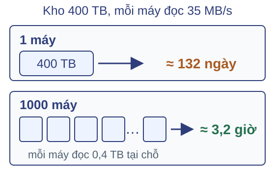
Tính dung lượng và thời gian đọc.
$2\times10^{10}\cdot2\times10^{4}=4\times10^{14}$ byte, tức 400 TB.
Một máy: $4\times10^{14}/(3{,}5\times10^{7})\approx1{,}14\times10^{7}$ s, khoảng 132 ngày.
1000 máy, mỗi máy $4\times10^{11}$ byte: $\approx1{,}14\times10^{4}$ s, khoảng 3,2 giờ.
Kết luận: với 1000 máy đọc tại chỗ, lượt quét 400 TB còn khoảng 3,2 giờ.
Số liệu lấy từ trang chiếu MMDS, tr.4: kho hơn 20 tỷ trang, mỗi trang khoảng 20 KB, tốc độ đọc đĩa 30–35 MB/s, lưu kho cần khoảng 1000 ổ đĩa. Với 30 MB/s, một máy mất khoảng 154 ngày; trang chiếu làm tròn thành "khoảng 4 tháng". Ở hàng 1000 máy, mỗi ổ đĩa gắn với một máy và 1000 máy đọc đồng thời phần của mình. Kiểm tra: $1{,}143\times10^{7}/86\,400\approx132{,}3$ ngày.
Nguồn: Ví dụ 02.1; trang chiếu MMDS Chương 2, tr.4.
Bốn yêu cầu của mô hình tính toán
1 Dữ liệu nằm trên nhiều máy Xử lý từng phần ở nơi lưu.
2 Song song hóa tính toán Các máy làm đồng thời.
3 Đưa tính toán đến gần dữ liệu Giảm truyền qua mạng.
4 Điều phối và phục hồi tự động Hệ thống chia việc, lập lịch, chạy lại.
Bốn yêu cầu suy từ Ví dụ 02.1. Thời gian trên 1000 máy bằng một phần nghìn thời gian trên một máy vì mỗi máy đọc một phần nghìn kho với cùng tốc độ; phép chia cho 1000 chỉ đúng khi mỗi máy đọc phần nằm trên đĩa của chính nó, không gửi qua mạng tới một máy. Vì vậy dữ liệu được xử lý ở nơi lưu và các máy làm đồng thời. Yêu cầu 3 giảm lượng dữ liệu qua mạng. Một phần việc được giao cho một máy gọi là tác vụ; lập lịch quyết định tác vụ nào chạy ở máy nào và khi nào. Yêu cầu 4 đến từ Nhận xét 01.3: với một triệu máy, mỗi ngày khoảng 1000 máy hỏng, nên việc chia việc, lập lịch và chạy lại do hệ thống đảm nhiệm cho mọi bài toán; người lập trình chỉ viết phần riêng của bài toán.
Nguồn: Mục 1.1 của ghi chú; MMDS §2.1, tr.21–24; CS246, trang chiếu 33.
Ví dụ: cộng sáu số trên ba máy
$a_1,\ldots,a_6=2,4,9,1,3,5$ trên ba máy. Tính $a_1+\cdots+a_6$ qua tổng bộ phận.
Ba tổng bộ phận 3, 7, 14 được chuyển tới bước gộp Gộp: $3+7+14=24$
Giao hoán Đổi thứ tự các số
Kết luận: $3+7+14=2+4+9+1+3+5=24$, đúng tổng theo thứ tự chỉ số.
Mỗi số nằm ở đúng một máy và góp đúng một lần vào một tổng bộ phận; ba máy cộng đồng thời. Kết quả gộp bằng tổng theo thứ tự chỉ số vì phép cộng cho phép đổi thứ tự các số và đổi cách nhóm chúng: $(a_1+a_4)+(a_2+a_5)+(a_3+a_6)=a_1+a_2+\cdots+a_6$. Bản sao lưu trữ của một số không phải số hạng mới: nếu $a_1=2$ được cộng hai lần, tổng là 26. Bổ đề 02.2 phát biểu điều kiện này cho một phép gộp $\oplus$ bất kỳ.
Nguồn: Ví dụ 02.2; MMDS §2.2.4, tr.27–28.
Gộp không phụ thuộc thứ tự và cách nhóm
Định nghĩa. $\oplus:E\times E\to E$ kết hợp khi $(x\oplus y)\oplus z=x\oplus(y\oplus z)$, giao hoán khi $x\oplus y=y\oplus x$; $\bigoplus$ gộp dãy từ trái sang phải.
Giả thiết: $\oplus$ kết hợp, giao hoán; dãy $e_1,\ldots,e_\ell$ khác rỗng; nhóm $G_1,\ldots,G_\sigma$ khác rỗng, rời nhau, phủ $\{1,\ldots,\ell\}$.
Bổ đề. Gọi $\gamma_j$ là phép gộp các $e_i$ với $i\in G_j$. Khi đó $\bigoplus(\gamma_1,\ldots,\gamma_\sigma)=\bigoplus(e_1,\ldots,e_\ell)$ (Bổ đề 02.2).
Ý nghĩa: cộng sáu số là $E=\mathbb Z$, $\oplus=+$, $G_1=\{1,4\}$, $G_2=\{2,5\}$, $G_3=\{3,6\}$, $\gamma_j=3,7,14$.
Phép gộp của dãy định nghĩa từ trái sang phải: $\bigoplus(e_1)=e_1$ và $\bigoplus(e_1,\ldots,e_\ell)=\bigoplus(e_1,\ldots,e_{\ell-1})\oplus e_\ell$. Chứng minh có ba bước. Bước 1: với hai dãy khác rỗng $\mathbf u,\mathbf u'$, $\bigoplus(\mathbf u\cdot\mathbf u')=(\bigoplus\mathbf u)\oplus(\bigoplus\mathbf u')$, quy nạp theo độ dài của $\mathbf u'$, chỉ dùng tính kết hợp. Bước 2: mọi hoán vị của dãy cho cùng kết quả gộp, quy nạp theo $\ell$; tính giao hoán đưa $e_\ell$ về cuối. Bước 3: xếp lại dãy để các phần tử của $G_1$ đứng trước, rồi $G_2$, …, $G_\sigma$; theo Bước 2 kết quả không đổi, rồi áp Bước 1 $\sigma-1$ lần. Phép cộng số nguyên, phép lấy giá trị lớn nhất và phép cộng từng thành phần trên cặp số đều kết hợp, giao hoán. Phép gộp chỉ định nghĩa cho dãy khác rỗng: một máy không giữ phần tử nào thì không phát tổng bộ phận. Bổ đề cho giá trị của phép gộp; số phép toán và thời gian được đếm ở mạch chi phí.
Nguồn: Định nghĩa 02.1, Bổ đề 02.2 và chứng minh; CLRS 4e, §2.1.
Phép gộp thiếu một giả thiết
Giả thiết bị bỏ Phản ví dụ
kết hợp $\mathrm{tb}(x,y)=\frac{x+y}{2}$: $\mathrm{tb}(\mathrm{tb}(2,4),9)=6$, $\mathrm{tb}(2;6{,}5)=4{,}25$; trung bình đúng 5 giao hoán $x\oplus y=x$: hai máy giữ $2$ và $4$ cho 2 hoặc 4 tùy máy báo trước mỗi phần tử một nhóm $a_1=2$ có hai bản sao, cả hai được cộng: 26 thay cho 24 tính chính xác số double: $(0{,}1+0{,}2)+0{,}3=0{,}6000000000000001$, $0{,}1+(0{,}2+0{,}3)=0{,}6$
Mỗi giả thiết của Bổ đề 02.2 có một vai trò trong chứng minh: Bước 1 dùng tính kết hợp, Bước 2 thêm tính giao hoán, Bước 3 dùng điều kiện mỗi phần tử thuộc đúng một nhóm. Phép trừ thiếu cả hai tính chất: $(5-3)-1=1$ còn $5-(3-1)=3$. Phép lấy phần tử đầu $x\oplus y=x$ kết hợp, vì hai vế đều bằng $x$, nhưng $2\oplus4=2$ còn $4\oplus2=4$. Phép trung bình hai số giao hoán nhưng không kết hợp. Với số dấu phẩy động, Bổ đề 02.2 áp cho số nguyên không tràn, phép lấy giá trị lớn nhất và số hữu tỷ chính xác; chương trình kiểm thử so kết quả với một sai số cho phép.
Nguồn: Mục 1.2 của ghi chú, các phản ví dụ sau Bổ đề 02.2.
Cụm máy và hệ thống tệp phân tán
Hệ thống tệp phân tán (DFS) chia tệp thành khối; mỗi khối có nhiều bản sao trên các tủ máy (rack).
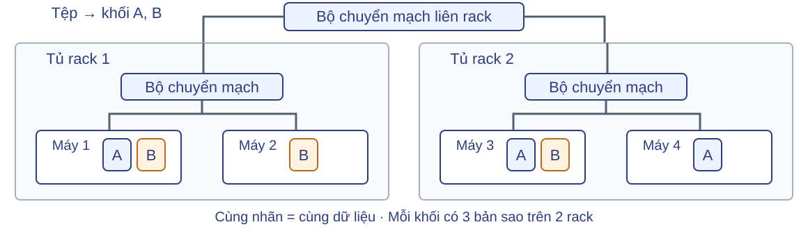
Cục bộ hóa tính toán Ưu tiên máy có khối, rồi máy cùng tủ, rồi tủ khác.
Chịu lỗi nhờ bản sao Mất máy 1 hay cả tủ 1 vẫn đọc được A và B.
Các nút tính toán xếp trong tủ máy, mỗi tủ khoảng 8–64 nút; các tủ nối bằng một bộ chuyển mạch (switch) khác. DFS lưu mỗi tệp thành các khối, thường 64 MB, mỗi khối thường ba bản sao, không đặt mọi bản sao trong cùng một tủ; nút chủ (name node) giữ vị trí các khối (Định nghĩa 02.3). Hệ thống tệp phân tán Hadoop (HDFS) là một bản cài đặt mã nguồn mở của DFS. Máy có bản sao đọc tại chỗ, máy cùng tủ đọc qua bộ chuyển mạch của tủ, máy ở tủ khác dùng đường nối liên tủ mà mọi cặp máy khác tủ dùng chung. Bản sao thuộc về lưu trữ: một phép tính đọc mỗi khối đúng một lần; đọc cả ba bản thì mỗi từ bị đếm ba lần.
Nguồn: MMDS §2.1.1–2.1.2, tr.22–24; CS246, trang chiếu 35.
2. Mô hình tính toán MapReduceMuốn đếm từ trên kho nằm ở nhiều máy, phải đặc tả hai hàm Map, Reduce và phép nhóm theo khóa.
Map · Reduce · Nhóm theo khóa · Các pha · Combine
Bổ đề 02.2 cho: tính cục bộ rồi gộp cho cùng kết quả khi phép gộp kết hợp, giao hoán và mỗi phần tử góp đúng một lần. Các lần xuất hiện của một từ nằm rải trên nhiều máy. Mạch này đặc tả hàm Map, hàm Reduce, hàm phân phối và phép nhóm theo khóa, chứng minh một công việc trả đúng một kết quả Reduce cho mỗi khóa, rồi nêu điều kiện để hàm Combine giữ nguyên kết quả.
Bài toán đếm từ
Nhu cầu: chó có ở cả hai máy; không máy nào tự tính được số đếm 2.
Đầu vào
$n\ge0$ văn bản $d_i$, mỗi văn bản $\ell_i$ từ, tách theo một quy tắc cố định.
Đầu ra
Mỗi $w\in\mathcal W$ đúng một cặp $(w,c(w))$, không quy định thứ tự.
$c_i(w)$ là số lần $w$ xuất hiện trong $d_i$; $\mathcal W$ là tập từ của kho:
$c(w) = \sum_{i=1}^{n} c_i(w)$
Đầu ra của hai văn bản (Ví dụ 02.3) là (mèo, 2), (chó, 2), (chim, 1), không quy định thứ tự; $2+2+1=5$ bằng tổng số từ $3+2$. Máy giữ $d_1$ biết chó xuất hiện một lần, máy giữ $d_2$ cũng vậy, nên các đóng góp $c_i(\text{chó})$ phải được đưa về một chỗ để cộng. Hai cách hiểu sai làm sai đầu ra: đếm số văn bản chứa từ cho mèo 1 thay cho 2; chia cho tổng số từ cho tần suất $2/5$, một bài toán khác. Một từ không xuất hiện không có cặp $(w,0)$; khi mọi văn bản rỗng, $\mathcal W$ rỗng và đầu ra rỗng. Ngân sách của bài toán loại cách gom cả kho về một máy.
Nguồn: Ví dụ 02.3, Định nghĩa 02.5; MMDS §2.2.1, Ví dụ 2.1, tr.25–26.
Ba bước của đếm từ: tách, nhóm, đếm
Trên một máy: words(doc.txt) | sort | uniq -c.
Bước Một máy MapReduce Bên thực hiện
tách wordsMap phát (từ, 1) người lập trình nhóm (sort) sortnhóm theo khóa hệ thống đếm uniq -cReduce cộng từng nhóm người lập trình
Ý nghĩa: bước nhóm gom mọi cặp cùng khóa, dù phát ở máy nào.
Về mặt ý tưởng, MapReduce giữ ba bước của dòng lệnh Unix: words tách tệp thành các từ, mỗi từ một dòng; sort đặt các dòng cùng từ liền nhau; uniq -c đếm độ dài mỗi đoạn dòng giống nhau. Khác ở chỗ kho nằm trên nhiều máy. Bước tách chạy độc lập trên từng phần của kho; bước sắp xếp trở thành bước nhóm theo khóa (group by key); bước đếm xử lý từng khóa độc lập. Bước đầu và bước cuối là hai hàm do người lập trình viết, chạy song song trên nhiều máy; bước giữa do hệ thống thực hiện và giống nhau cho mọi bài toán.
Nguồn: Mục 2.2 của ghi chú; trang chiếu MMDS, tr.13; MMDS §2.2, tr.25.
Ví dụ: đếm từ trong hai văn bản
Tính các nhóm $L_w$ và đầu ra Reduce cho $d_1$, $d_2$.
Map: phát (từ, 1)
$d_1$ = "mèo chó mèo"
(mèo, 1)
(chó, 1)
(mèo, 1)
Nhóm theo từ
mèo: $[1, 1]$
chó: $[1, 1]$
chim: $[1]$
Reduce: cộng từng nhóm
(mèo, 2)
(chó, 2)
(chim, 1)
Kiểm tra: $2+2+1=5$ cặp của $Z$.
Vết chạy theo ba định nghĩa vừa nêu (Ví dụ 02.4). Map được gọi cho $(1,d_1)$ và $(2,d_2)$; $d_1$ phát hai cặp (mèo, 1) vì mèo xuất hiện hai lần, nên $Z$ có 5 cặp. Nhóm theo khóa cho $L_{\text{mèo}}=[1,1]$, $L_{\text{chó}}=[1,1]$, $L_{\text{chim}}=[1]$; danh sách của chó có một giá trị từ $d_1$ và một từ $d_2$. Bước Map không cần biết văn bản khác chứa gì; bước Reduce cho chó cần cả hai giá trị 1 nhưng không cần biết chúng đến từ máy nào. Việc đưa các đóng góp về một chỗ nằm hết ở bước nhóm theo khóa. Đầu ra trùng Ví dụ 02.3.
Nguồn: Ví dụ 02.4; MMDS §§2.2.1–2.2.3.
Thuật toán: Map và Reduce cho đếm từ
Hàm Map
Đầu vào: $(i,d_i)$; Đầu ra: $\ell_i$ cặp $(w_{ij},1)$.
Map(i, d):
với mỗi từ w trong d, theo thứ tự:
phát (w, 1)
Hàm Reduce
Đầu vào: $w$ và $L_w$; Đầu ra: $(w,\sum_{x\in L_w}x)$.
Reduce(w, L):
tổng = 0
với mỗi x trong L:
tổng = tổng + x
phát (w, tổng)
Mô hình: đếm phép toán. Map trên $d_i$ phát $\ell_i$ cặp; Reduce cho $w$ làm $\lvert L_w\rvert$ phép cộng, giữ một biến tổng.
Hai hàm viết lại vết chạy vừa xem (Thuật toán 02.9). Map phát một cặp cho mỗi vị trí $j$ của $d_i$, kể cả các cặp lặp, không gộp trước. Reduce đọc $L_w$ lần lượt từng phần tử và chỉ giữ một biến tổng, nên không cần nạp cả danh sách vào bộ nhớ; phép cộng không phụ thuộc thứ tự các phần tử của $L_w$, điều cần thiết vì hệ thống không quy định thứ tự đó. Văn bản rỗng không phát cặp nào; Reduce không được gọi với danh sách rỗng vì một từ không xuất hiện không có nhóm. Tổng khởi tạo bằng 0, nên Reduce làm $\lvert L_w\rvert$ phép cộng. Giả thiết: mọi văn bản dùng cùng quy tắc tách từ; số đếm vừa một ô nhớ.
Nguồn: Thuật toán 02.9; MMDS §§2.2.1–2.2.3.
Hàm, tác vụ và máy
Một tác vụ Reduce thực hiện nhiều reducer; một máy chạy nhiều tác vụ.
Tác vụ Map
Tác vụ Map 1 · Máy 1
Tác vụ Map 2 · Máy 2
Tác vụ Map 3 · Máy 3
Phân phối theo $h$:
Tác vụ Reduce
Tác vụ Reduce 1 · Máy 1
Tác vụ Reduce 2 · Máy 3
Ba cặp dễ nhầm: hàm và tác vụ (một tác vụ Map gọi hàm Map nhiều lần), văn bản và khối (một khối DFS chứa nhiều văn bản), từ và máy (một tác vụ Reduce nhận nhiều từ). Một tác vụ Reduce thực hiện nhiều reducer, và một máy có thể chạy cả tác vụ Map lẫn tác vụ Reduce, như máy 1. Nếu mỗi reducer là một tác vụ riêng, thời gian các tác vụ chênh lệch lớn. Giao các khóa ngẫu nhiên vào ít tác vụ Reduce hơn số khóa làm thời gian các tác vụ gần nhau hơn; dùng nhiều tác vụ hơn số máy cho phép một tác vụ dài chiếm trọn một máy trong khi vài tác vụ ngắn chạy lần lượt trên máy khác. Bài tập 02.1 định lượng lệch tải.
Nguồn: Nhận xét 02.13; MMDS, hộp tr.28.
Combine giữ nguyên kết quả
Giả thiết:
$V_2=E$; $\oplus:E\times E\to E$ kết hợp, giao hoán.
Có hàm hoàn tất $\phi:E\to V_3$ với $\mathrm{Reduce}(k,L)=\big((k,\phi(\bigoplus L))\big)$.
Mỗi lần gọi Combine trên $(k,L)$ phát đúng một cặp $(k,\bigoplus L)$.
Mệnh đề. $L'_k$ là danh sách Reduce nhận sau Combine. Với mọi cách gọi Combine, kể cả không gọi, $\mathrm{Reduce}(k,L'_k)=\mathrm{Reduce}(k,L_k)$ (Mệnh đề 02.15).
Ý nghĩa: đếm từ: $\oplus=+$, $\phi$ đồng nhất; trung bình: $\phi(s,\kappa)=s/\kappa$.
$L'_k$ là danh sách mà Reduce nhận cho khóa $k$ sau các lần gọi Combine; $L_k$ là danh sách khi không có Combine. Nhờ hàm hoàn tất $\phi$, mệnh đề tổng quát hơn điều kiện "Reduce kết hợp và giao hoán" của MMDS. Điều kiện áp dụng: các giả thiết của Mệnh đề 02.11 và phép gộp tính chính xác. Phản ví dụ khi bỏ giả thiết: trung bình hai số làm phép gộp trên $[2,4]$ và $[9]$ cho 6 thay cho 5; Reduce phát độ dài danh sách cùng Combine cộng cho mèo 1 thay cho 2; Combine đổi khóa chó thành chó! tạo một nhóm lạ; Combine phát cặp (tổng, số phần tử) thay cho một số làm phép cộng của Reduce không xác định.
Nguồn: Mệnh đề 02.15; MMDS §2.2.4, tr.27.
Chứng minh: Combine giữ nguyên kết quả
Bất biến: $M_k$, dãy nối các giá trị của khóa $k$ đang chờ gửi, khác rỗng và $\bigoplus M_k=\bigoplus L_k$.
Bước 1: trước lần gọi đầu, $M_k$ là một hoán vị của $L_k$; gộp không phụ thuộc thứ tự.
Bước 2: một lần gọi thay phần $L$ khác rỗng của $M_k$ bằng $\bigoplus L$; gộp theo nhóm giữ $\bigoplus M_k$ (Bổ đề 02.2).
Bước 3: khi gửi đi, $L'_k=M_k$, nên $\phi(\bigoplus L'_k)=\phi(\bigoplus L_k)$. $\square$
Bước 2 chi tiết: phân hoạch các vị trí của $M_k$ thành nhóm các vị trí của $L$ và các nhóm một phần tử; theo Bổ đề 02.2(c), $\bigoplus M_k$ bằng phép gộp của $\bigoplus L$ với các phần tử còn lại, và theo Bổ đề 02.2(b), phép gộp này không phụ thuộc vị trí của $\bigoplus L$ trong dãy. Combine giữ khóa $k$, nên phần tử mới vẫn thuộc nhóm của $k$; giữ kiểu $E$, nên phép gộp tiếp theo xác định; dãy mới chứa $\bigoplus L$, nên khác rỗng. Bước 3: số lần gọi Combine hữu hạn; quy nạp trên số lần gọi cho $\bigoplus L'_k=\bigoplus L_k$, và Reduce có dạng $\phi(\bigoplus L)$, nên $\mathrm{Reduce}(k,L'_k)=\mathrm{Reduce}(k,L_k)$. Điều này đúng với mọi khóa, nên theo Mệnh đề 02.11 đầu ra như khi không có Combine. Bước 1 và Bước 2 dùng tính kết hợp, giao hoán qua Bổ đề 02.2; Bước 2 dùng hai điều kiện giữ khóa, giữ kiểu; Bước 3 dùng dạng $\phi(\bigoplus L)$.
Nguồn: chứng minh Mệnh đề 02.15 trong ghi chú.
3. Các ví dụ MapReduceMuốn áp mô hình cho bài toán mới, phải chọn khóa và giá trị trung gian đủ để gộp đúng.
Nhân ma trận–véc-tơ · Đếm từ phân biệt · Trung bình cộng · Tính đúng
Mệnh đề 02.11 bảo đảm phần khung, Mệnh đề 02.15 cho điều kiện dùng Combine. Với đếm từ, khóa và giá trị có sẵn; với bài toán khác, chúng phải được chọn sao cho Reduce tính được kết quả và Combine dùng được. Mạch này chọn chúng cho nhân ma trận–véc-tơ, đếm từ phân biệt và trung bình cộng, với ba kiểu giá trị trung gian: tích, dấu hiệu có mặt, cặp tổng–số lượng.
Bài toán nhân ma trận–véc-tơ
Nhu cầu: PageRank lặp $y=Av$ với số chiều cỡ $10^{12}$; ma trận đặc có $10^{24}$ phần tử.
Đầu vào: $A\in\mathbb{R}^{q\times q}$ lưu thành $q^2$ bản ghi $(i,j,a_{ij})$, kể cả $a_{ij}=0$; $v\in\mathbb{R}^q$.
Đầu ra: $q$ cặp $(i,y_i)$ với $y_i=\sum_{j=1}^{q}a_{ij}v_j$.
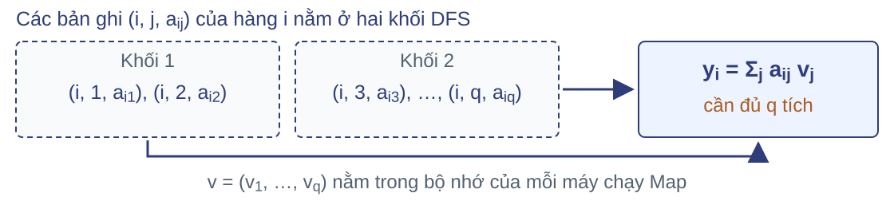
Giả thiết: $v$ vừa bộ nhớ mỗi máy chạy Map; số học chính xác.
Xếp hạng trang web theo PageRank lặp phép nhân ma trận với véc-tơ (vector). Phần tử ở hàng $i$, cột $j$ khác 0 khi và chỉ khi trang $j$ có liên kết tới trang $i$, nên ma trận thưa, trung bình 10–15 phần tử khác 0 mỗi hàng. MapReduce của Google được tạo ra trước hết cho các phép nhân cỡ này. Như MMDS, bài đặc tả cho ma trận vuông; ma trận $p\times q$ là Bài tập 02.5. Các bản ghi của hàng $i$ có thể nằm ở nhiều khối DFS, nên các tích của cùng một hàng phải được đưa về một chỗ, như các lần xuất hiện của cùng một từ. Giả thiết bộ nhớ cho phép mỗi tác vụ Map đọc $v$ một lần rồi tra $v_j$ cho mọi bản ghi của nó.
Nguồn: Định nghĩa 02.17; MMDS §2.3.1, tr.31, chú thích 3.
Khóa hàng cho nhân ma trận–véc-tơ
Tương tự đếm từ, nhưng khóa là hàng $i$ và giá trị là tích $a_{ij}v_j$.
Mỗi tác vụ Map đọc $v$ vào bộ nhớ một lần.
Bản ghi $(2,3,2)$, $v_3=3$: Map tính $2\cdot3=6$ và phát $(2,6)$.
Khóa là 2 vì 6 là một số hạng của $y_2$.
Ý nghĩa: mọi số hạng của $y_i$ mang khóa $i$, nên gặp nhau ở một reducer.
Mỗi bản ghi đóng vai một lần xuất hiện của đếm từ: khóa là chỉ số hàng thay cho từ, giá trị là tích thay cho số 1. Nhận xét cấu trúc: $y_i$ chỉ cần các tích của hàng $i$, nên khóa hàng gom đủ số hạng của $y_i$ ở một reducer dù các bản ghi nằm ở nhiều khối. Khóa cột $j$ thì sai: nhóm của cột $j$ gồm các số hạng của $q$ thành phần khác nhau; ở ví dụ $4\times4$, nhóm của cột 1 là $[1,0,2,1]$, tổng 4, không là thành phần nào của $y=(9,8,9,11)$.
Nguồn: Mục 3.1 của ghi chú; MMDS §2.3.1, tr.31.
Thuật toán: nhân ma trận–véc-tơ
Đầu vào: bản ghi $(i,j,a_{ij})$ chia thành $m$ phần; $v$ trong bộ nhớ mỗi tác vụ Map.
Đầu ra: các cặp $(i,y_i)$, $1\le i\le q$.
Map(phần của A): # v đã nằm trong bộ nhớ
với mỗi bản ghi (i, j, a_ij):
phát (i, a_ij * v[j])
Combine(i, L): phát (i, tổng các phần tử của L)
Reduce(i, L): phát (i, tổng các phần tử của L)
Thao tác quyết định: khóa $i$; Combine và Reduce cùng phép cộng.
Thao tác quyết định là chọn khóa $i$ ở dòng phát: mọi số hạng của $y_i$ mang cùng khóa nên gặp nhau ở một reducer. Combine và Reduce là cùng một phép cộng, nên Combine được phép theo Mệnh đề 02.15 với $\oplus=+$ và $\phi$ đồng nhất. Mỗi phần có hữu hạn bản ghi và mỗi danh sách hữu hạn, nên thuật toán dừng. Một hàng toàn số 0 vẫn có $q$ bản ghi, nên vẫn có nhóm và Reduce phát $(i,0)$. Hàm Map được gọi cho từng bản ghi; vòng lặp trong giả mã là các lần gọi trong một tác vụ.
Nguồn: Thuật toán 02.18; MMDS §2.3.1.
Ví dụ: ma trận 4×4 chia bốn khối con
Bốn khối con $2\times2$: $A_{11},A_{12}$ ở trên, $A_{21},A_{22}$ ở dưới; mỗi khối con một tác vụ Map.
$A=\left[\begin{array}{cc|cc}1&2&0&1\\0&1&2&0\\\hline2&0&1&1\\1&1&0&2\end{array}\right],\quad v=\begin{bmatrix}1\\2\\3\\4\end{bmatrix}$
Tính $y=Av$ qua Map, Combine, Reduce.
Khối con Các cặp Map phát Combine phát
$A_{11}$ (1,1), (1,4) (1,5) $A_{12}$ (1,0), (1,4) (1,4) $A_{21}$ (3,2), (3,0) (3,2) $A_{22}$ (3,3), (3,4) (3,7)
Kết luận: Reduce cộng theo hàng: $5+4=9$, $2+6=8$, $2+7=9$, $3+8=11$; $y=(9,8,9,11)$.
$A_{11}$ gồm hàng 1–2, cột 1–2; $A_{12}$ hàng 1–2, cột 3–4; $A_{21}$ hàng 3–4, cột 1–2; $A_{22}$ hàng 3–4, cột 3–4. Chỉ số $i,j$ trong bản ghi là chỉ số của cả ma trận. Map phát 16 cặp, kể cả bốn tích bằng 0; Combine còn 8 cặp. Sau Combine, $L_1=[5,4]$, $L_2=[2,6]$, $L_3=[2,7]$, $L_4=[3,8]$; Reduce phát $(1,9)$, $(2,8)$, $(3,9)$, $(4,11)$. Kiểm tra từng hàng: $1+4+0+4=9$, $0+2+6+0=8$, $2+0+3+4=9$, $1+2+0+8=11$. Mỗi khóa hàng nhận đúng hai tổng bộ phận, một từ mỗi khối con mà hàng đó cắt qua; tổng $5+4$ chỉ được tính ở Reduce, như hai cặp (chó, 1) từ hai tác vụ Map.
Nguồn: Ví dụ 02.6; MMDS §2.3.1.
Tính đúng: nhân ma trận–véc-tơ
Mệnh đề. Đầu ra gồm đúng $q$ cặp $(i,y_i)$ với $y_i=\sum_{j=1}^{q}a_{ij}v_j$, có hay không có Combine (Mệnh đề 02.19).
Mỗi tọa độ một bản ghi, Map gọi một lần cho nó: tích $a_{ij}v_j$ được phát đúng một lần.
Khóa của $Z$ là $1,\ldots,q$; $L_i$ là hoán vị của $(a_{i1}v_1,\ldots,a_{iq}v_q)$, Reduce cộng ra $y_i$.
Combine: $E=\mathbb R$, $\oplus=+$, $\phi$ đồng nhất; đầu ra không đổi.
Giả thiết: đầu vào thỏa Định nghĩa 02.17 và công việc thỏa các giả thiết của Mệnh đề 02.11; điều kiện áp dụng là số học chính xác và mỗi tọa độ đúng một bản ghi. Bước 1 dùng Mệnh đề 02.11; Bước 2 dùng việc khóa là hàng và phép cộng không phụ thuộc thứ tự; Bước 3 dùng Mệnh đề 02.15. Giả thiết $v$ vừa bộ nhớ chỉ ảnh hưởng chi phí. Phản ví dụ: bản ghi $(1,2,2)$ có mặt hai lần cho $L_1$ hai số 4 và $y_1=13$. Với số dấu phẩy động, các tổng bộ phận có thể làm $y_i$ khác ở các chữ số cuối. Ma trận chữ nhật $p\times q$ là Bài tập 02.5: chứng minh giữ nguyên, khóa chạy tới $p$.
Nguồn: Mệnh đề 02.19 và chứng minh; Nhận xét 02.20; MMDS §2.3.1.
Chi phí: nhân ma trận–véc-tơ
Mô hình: đếm phép toán số học, không Combine; mỗi tổng khởi tạo bằng phần tử đầu.
Thuật toán đọc $v$ ở mỗi tác vụ Map, làm $q^2$ phép nhân và $q(q-1)$ phép cộng.
Bước Số lần Chi phí mỗi lần Đóng góp
Đọc $v$ $m$ tác vụ Map $q$ thành phần $mq$ thành phần Map $q^2$ bản ghi 1 phép nhân $q^2$ phép nhân Reduce $q$ hàng $q-1$ phép cộng $q(q-1)$ phép cộng
Ma trận $4\times4$, $m=4$: đọc 16 thành phần, 16 phép nhân, 12 phép cộng.
Bảng theo mục Chi phí của Thuật toán 02.18. Mỗi tác vụ Map đọc $v$ một lần, nên lượng đọc $v$ tăng theo số tác vụ Map. Mỗi bản ghi cho một phép nhân; mỗi hàng có $q$ tích, cộng chúng bằng $q-1$ phép cộng khi tổng khởi tạo bằng phần tử đầu. Có Combine, tổng số phép cộng ở Combine và Reduce vẫn là $q(q-1)$, chỉ chuyển một phần sang phía Map, vì mỗi phép cộng vẫn gộp hai giá trị thành một. Combine giảm số cặp gửi tới Reduce: ở ví dụ $4\times4$, từ 16 xuống 8 cặp.
Nguồn: Thuật toán 02.18, mục Chi phí; Ví dụ 02.6.
Bài toán đếm từ phân biệt
Nhu cầu: “mèo chó mèo” và “chó chim” có 2 và 2 từ phân biệt, nhưng cả kho chỉ có 3.
Đầu vào: $n\ge0$ văn bản $d_1,\ldots,d_n$ tách từ theo cùng quy tắc; $\mathcal W_i$ là tập từ của $d_i$.
Đầu ra: số từ phân biệt của kho:
$D=\left|\bigcup_{i=1}^{n}\mathcal W_i\right|$
Trường hợp biên: mọi văn bản rỗng thì $D=0$.
Cộng số từ phân biệt của từng văn bản cho $2+2=4$, sai vì chó có mặt ở cả hai văn bản. $D$ bằng $\lvert\mathcal W\rvert$ của bài toán đếm từ, nhưng bài toán chỉ cần một số, không cần số đếm của từng từ. Hợp các tập đếm mỗi từ một lần dù nó có mặt ở bao nhiêu văn bản; tổng $\sum_i\lvert\mathcal W_i\rvert$ đếm một từ một lần cho mỗi văn bản chứa nó. Hai đại lượng bằng nhau khi và chỉ khi các tập $\mathcal W_i$ đôi một rời nhau. Số từ phân biệt không gộp được bằng phép cộng; cần loại trùng trước rồi mới đếm.
Nguồn: Định nghĩa 02.21; MMDS §2.3.5, tr.36.
Đếm từ phân biệt bằng hai công việc
Tương tự đếm từ, nhưng giá trị chỉ là dấu hiệu có mặt; cần hai khóa nên cần hai công việc.
Công việc 1: nhóm theo từ $w$, giữ một cặp $(w,1)$ cho mỗi từ hiện diện.
Công việc 2: đếm các cặp ấy bằng khóa chung $g$.
Từ ở nhiều văn bản Một cặp cho mỗi từ Đếm với khóa chung g Bước tính tay: $d_1$ phát (mèo, 1) hai lần; nhóm mèo $[1,1]$ thay bằng một cặp (mèo, 1).
Điều cần biết chỉ là mèo có mặt, nên danh sách $[1,1]$ được thay bằng một cặp (mèo, 1). Làm như vậy cho mọi từ trên cả kho được đúng một cặp cho mỗi từ phân biệt, rồi chỉ còn đếm số cặp. Hai bước dùng hai khóa khác nhau, nên cần hai công việc nối tiếp, gọi bởi một chương trình chính (driver): chương trình chạy ngoài khung MapReduce, gọi lần lượt các công việc và đọc đầu ra của chúng. Công việc 2 dùng khóa chung $g$, một nhãn cố định khác mọi từ, để mọi cặp về một reducer.
Nguồn: Mục 3.2 của ghi chú; MMDS §2.3.5, tr.36.
Thuật toán: đếm từ phân biệt
Đầu vào: $n$ văn bản; công việc 2 nhận đầu ra công việc 1.
Đầu ra: số $D$, giá trị của cặp $(g,\cdot)$ do công việc 2 phát.
Hàm Công việc 1: loại trùng Công việc 2: đếm
Map Với mỗi lần từ $w$ xuất hiện, phát $(w,1)$. Nhận $(w,1)$, phát $(g,1)$. Combine Nhận $(w,L)$, phát $(w,1)$. Nhận $(g,L)$, phát $(g,\sum_{x\in L}x)$. Reduce Nhận $(w,L)$, phát $(w,1)$. Nhận $(g,L)$, phát $(g,\sum_{x\in L}x)$.
Chương trình chính chạy công việc 1; không có cặp đầu ra thì trả $D=0$, ngược lại chạy công việc 2.
Công việc 1 là phép loại trùng của MMDS: Reduce biến một khóa cùng danh sách các bản lặp của nó thành một cặp duy nhất. Phép loại trùng kết hợp và giao hoán, nên Combine loại được các bản trùng trong một tác vụ Map; Reduce vẫn cần để loại hai bản trùng đến từ hai tác vụ Map khác nhau. Hai hàm Combine có hai vai: ở công việc 1, Combine giữ dấu hiệu có mặt; ở công việc 2, Combine giữ tổng. Reduce không được gọi với danh sách rỗng, nên khi mọi văn bản rỗng, bước kiểm của chương trình chính trả 0. Giả thiết: các giả thiết của Mệnh đề 02.11 cho cả hai công việc.
Nguồn: Thuật toán 02.22; MMDS §2.3.5, tr.36.
Ví dụ: đếm từ phân biệt trong hai văn bản
$d_1$ = “mèo chó mèo”, $d_2$ = “chó chim”. Tính $D$.
Bước Dữ liệu
Map, công việc 1 5 cặp: (mèo,1), (chó,1), (mèo,1) từ $d_1$; (chó,1), (chim,1) từ $d_2$ Combine 4 cặp: $d_1$ còn (mèo,1), (chó,1); $d_2$ giữ (chó,1), (chim,1) Reduce, công việc 1 mèo [1] → 1; chó [1, 1] → 1; chim [1] → 1: 3 cặp Công việc 2 Map phát (g,1) ba lần → nhóm [1,1,1] → Reduce (g,3)
Kết luận: $D=3$; số cặp trung gian: 5 ở công việc 1, 3 ở công việc 2.
Vết chạy của Ví dụ 02.7: mỗi văn bản một tác vụ Map, Combine gọi một lần cho mỗi khóa trên toàn bộ đầu ra của mỗi tác vụ. Combine loại được lần lặp của mèo trong $d_1$ nhưng không loại được hai cặp (chó, 1) ở hai tác vụ; Reduce của công việc 1 làm việc đó, và công việc 2 chỉ đếm các cặp còn lại. Kiểm tra: $\mathcal W_1\cup\mathcal W_2=\{\text{mèo},\text{chó},\text{chim}\}$ có 3 phần tử; $\lvert\mathcal W_1\rvert+\lvert\mathcal W_2\rvert=4$ đếm chó hai lần. Số cặp khớp mục Chi phí của Thuật toán 02.22: công việc 1 có $\sum_i\ell_i=5$ cặp trung gian khi không Combine và $D=3$ cặp đầu ra; công việc 2 có $D=3$ cặp trung gian và một cặp đầu ra.
Nguồn: Ví dụ 02.7; Thuật toán 02.22.
Tính đúng: đếm từ phân biệt
Mệnh đề. Thuật toán trả đúng $D$, có hay không có Combine ở mỗi công việc (Mệnh đề 02.23).
Khóa của $Z$ ở công việc 1 là $\bigcup_i\mathcal W_i$; Reduce phát đúng một $(w,1)$ mỗi khóa.
Combine công việc 1: $E=\{1\}$, $x\oplus y=1$ kết hợp, giao hoán.
Công việc 2 nhận $D$ cặp, mỗi cặp góp một số 1 vào khóa $g$: Reduce phát $(g,D)$.
Trường hợp biên: $D=0$ thì chương trình chính trả 0.
Giả thiết: đầu vào thỏa Định nghĩa 02.21 và hai công việc thỏa các giả thiết của Mệnh đề 02.11; mọi văn bản dùng cùng một quy tắc tách từ. Bước 1 dùng Mệnh đề 02.11: Reduce được gọi đúng một lần cho mỗi khóa, và một từ không xuất hiện không sinh cặp. Bước 2: trên $E=\{1\}$, $\bigoplus L=1$ với mọi danh sách khác rỗng, nên Combine và Reduce của công việc 1 có dạng của Mệnh đề 02.15 với $\phi$ đồng nhất. Bước 3: Combine của công việc 2 là phép cộng, cũng đúng theo Mệnh đề 02.15. Một công việc với một tác vụ Reduce giữ cả tập từ cũng đúng, nhưng cần bộ nhớ tỷ lệ với $D$ ở một máy, trái ngân sách của bài toán khi $D$ lớn.
Nguồn: Mệnh đề 02.23 và chứng minh; MMDS §2.3.5, tr.36.
Kích thước từ vựng của kho trang web
Ma trận trang–từ: mỗi hàng một trang, mỗi cột một từ; số cột là $D$.
Kho n trang web
→
Một cặp mỗi từ
→
D cột
“mèo chó mèo” và “chó chim”: $D=3$, ba cột mèo, chó, chim.
Gán mỗi từ một chỉ số cột là một bước riêng, dùng đầu ra của công việc 1.
Biểu diễn kho trang web bằng ma trận trang–từ, mỗi hàng một trang và mỗi cột một từ, cần biết số cột, tức số từ phân biệt của kho sau một quy tắc tách từ cố định. Với hai văn bản, có 5 lần xuất hiện nhưng $D=3$ từ phân biệt, nên ma trận có 3 cột. Thuật toán đếm chỉ cho số cột; bước gán chỉ số cột dùng đầu ra của công việc 1, đúng một cặp cho mỗi từ.
Nguồn: Mục 3.2 của ghi chú, đoạn "Trong thực hành" sau Mệnh đề 02.23.
Bài toán trung bình cộng
Nhu cầu: [2, 4] có trung bình 3, [9] có trung bình 9; trung bình của 3 và 9 là 6, của cả dãy là 5.
Đầu vào: dãy số thực $a_1,\ldots,a_n$, với $n\geq1$.
Đầu ra: trung bình cộng của toàn bộ dãy:
$\mu=\frac{1}{n}\sum_{i=1}^{n}a_i$
Giả thiết: số học chính xác; dãy rỗng không có trung bình.
Trung bình cục bộ bỏ mất số phần tử của nhóm: nhóm $[2,4]$ có hai phần tử nhưng được tính như nhóm $[9]$ một phần tử. Bổ đề 02.2 không áp được vì phép lấy trung bình hai số không kết hợp, như phản ví dụ $\mathrm{tb}(\mathrm{tb}(2,4),9)=6$. Cần một giá trị trung gian giữ đủ thông tin để gộp. Dữ liệu được chia theo vị trí: hai phần tử bằng nhau ở hai vị trí là hai đóng góp.
Nguồn: Định nghĩa 02.24; MMDS Bài 2.3.1(b), tr.40.
Trạng thái tổng và số lượng
Trạng thái $(s,\kappa)$: $s$ là tổng, $\kappa\ge1$ là số phần tử của một nhóm.
Gộp: $(s,\kappa)\oplus(s',\kappa')=(s+s',\kappa+\kappa')$, ví dụ $(2,1)\oplus(4,1)=(6,2)$.
Trạng thái (s, κ) Cộng tổng và số lượng Chia tổng cho số lượng Trạng thái tổng–số lượng của Định nghĩa 02.24 thuộc $\mathbb R\times\mathbb N_{\ge1}$. Phép cộng từng thành phần đóng trên tập này, kết hợp và giao hoán, nên Bổ đề 02.2 áp được cho trạng thái. Trạng thái giữ đủ thông tin để gộp: từ $(s,\kappa)$ của hai nhóm rời nhau tính được tổng và số phần tử của nhóm hợp, còn từ hai trung bình $s/\kappa$, $s'/\kappa'$ thì không tính được khi không biết $\kappa,\kappa'$. Với $(6,2)$ và $(9,1)$ được $(15,3)$, rồi $15/3=5$; phép chia chỉ làm một lần ở cuối.
Nguồn: Định nghĩa 02.24; MMDS §2.2.4.
Thuật toán: trung bình cộng
Đầu vào: $a_1,\ldots,a_n$, $n\geq1$, chia thành $m$ phần; khóa chung $g$.
Đầu ra: $(g,\mu)$; $L$ là danh sách các trạng thái $(s,\kappa)$.
$(s^\ast,\kappa^\ast)=\bigoplus L$: cộng từng thành phần, giữ mọi lần lặp.
Hàm Đầu vào → cặp được phát Kiểu giá trị phát
Map $a_i\ \longrightarrow\ (g,(a_i,1))$ trạng thái $(s,\kappa)$ Combine $(g,L)\ \longrightarrow\ (g,\bigoplus L)$ trạng thái $(s,\kappa)$ Reduce $(g,L)\ \longrightarrow\ (g,s^\ast/\kappa^\ast)$ một số
Thao tác quyết định: phép chia, làm một lần ở Reduce sau khi mọi trạng thái đã gộp.
Combine và Reduce ở đây khác nhau, khác với đếm từ và nhân ma trận. Dùng Reduce làm Combine thì Combine phát một số thay cho một trạng thái, vi phạm điều kiện giữ kiểu, và Reduce không còn biết kích thước các nhóm. Trường hợp biên: $n=1$ cho $L_g=[(a_1,1)]$ và $\mu=a_1$; với $n=0$ không có nhóm nào và chương trình chính báo trung bình không xác định. Giả thiết: các giả thiết của Mệnh đề 02.11; số học chính xác. Thuật toán dừng vì mọi danh sách hữu hạn.
Nguồn: Thuật toán 02.25; MMDS Bài 2.3.1(b), tr.40.
Ví dụ: trung bình của 2, 4, 9
Tác vụ Map 1 giữ $[2,4]$, tác vụ Map 2 giữ $[9]$; $n=3$. Tính $\mu$.
Bước Dữ liệu
Map 1 phát $(g,(2,1))$, $(g,(4,1))$ → Combine phát $(g,(6,2))$ Map 2 phát $(g,(9,1))$ → Combine phát lại cặp đó Reduce $L_g=[(6,2),(9,1)]$ → $(s^\ast,\kappa^\ast)=(15,3)$ → phát $(g,5)$
Kết luận: $\mu=15/3=5$; chia sớm ở Combine cho 3 và 9, trung bình $6\ne5$.
Ví dụ 02.8. Số 2 trong cặp $(6,2)$ đi cùng tổng 6 tới Reduce, nên Reduce biết nhóm của tác vụ Map 1 có hai phần tử; ở cách chia sớm, thông tin đó mất ngay tại tác vụ Map. Kiểm tra: $(2+4+9)/3=5$. Hai trạng thái gửi tới Reduce thay cho ba cặp khi không có Combine.
Nguồn: Ví dụ 02.8.
Tính đúng: trung bình cộng
Bất biến: mỗi trạng thái $(s,\kappa)$ là tổng và số phần tử của một nhóm vị trí; các nhóm rời nhau.
Khởi tạo Duy trì Kết thúc Map phát $(a_i,1)$, nhóm $\{i\}$. Gộp hai nhóm rời nhau $G,G'$ cho tổng, số phần tử của $G\cup G'$. $(s^\ast,\kappa^\ast)=(\sum_i a_i,n)$, $n\ge1$, nên $s^\ast/\kappa^\ast=\mu$.
Kết luận: công việc phát đúng một cặp $(g,\mu)$, có hay không có Combine (Mệnh đề 02.26).
Giả thiết: $n\ge1$; công việc dùng Thuật toán 02.25 và thỏa các giả thiết của Mệnh đề 02.11; số học chính xác. Ở bước kết thúc, Mệnh đề 02.11 cho Reduce được gọi đúng một lần cho khóa $g$ với danh sách chứa trạng thái của mọi nhóm, và các nhóm phủ mọi vị trí $1,\ldots,n$. Combine không đổi kết quả theo Mệnh đề 02.15 với $E=\mathbb R\times\mathbb N_{\ge1}$ và $\phi(s,\kappa)=s/\kappa$, trường hợp có hàm hoàn tất khác đồng nhất. Phản ví dụ: bỏ $n\ge1$ thì không có nhóm và $\mu$ không xác định; số 9 được đọc hai lần cho $(24,4)$ và kết quả 6. Với số dấu phẩy động, $s$ có thể khác ở các chữ số cuối, còn $\kappa$ là số nguyên nên luôn chính xác.
Nguồn: Mệnh đề 02.26 và chứng minh.
Chi phí: trung bình cộng
Mô hình: đếm phép toán số học, không Combine; gộp khởi tạo bằng trạng thái đầu.
Thuật toán làm $n$ lần phát, $2(n-1)$ phép cộng và một phép chia.
Bước Số lần Chi phí mỗi lần Đóng góp
Map $n$ phần tử 1 lần phát $n$ lần phát Gộp ở Reduce $n-1$ lần gộp 2 phép cộng $2(n-1)$ phép cộng Chia ở Reduce 1 1 phép chia 1 phép chia
Có Combine: vẫn $n-1$ lần gộp, chia giữa Combine và Reduce; vẫn một phép chia.
Bảng theo mục Chi phí của Thuật toán 02.25. Mỗi lần gộp hai trạng thái cộng hai thành phần, nên tốn 2 phép cộng; từ $n$ trạng thái xuống một trạng thái cần $n-1$ lần gộp. Với dãy $2,4,9$: 3 lần phát, 2 lần gộp tức 4 phép cộng, và phép chia $15/3$. Khóa chung $g$ dồn mọi giá trị về một reducer, nên các phép gộp của Reduce chạy trên một máy; Combine làm reducer đó chỉ nhận một trạng thái từ mỗi tác vụ Map thay cho một giá trị từ mỗi phần tử, ở ví dụ là 2 thay cho 3.
Nguồn: Thuật toán 02.25, mục Chi phí; Nhận xét 02.27.
Ví dụ: số từ trung bình mỗi trang
Hai trang “mèo chó mèo”, “chó chim”; $a_i=\ell_i$ là số từ của trang $i$, tính cả từ lặp. Tính $\mu$.
(3, 1) và (2, 1)
→
Gộp: (5, 2)
→
2,5 từ / trang
$\mu=5/2=2{,}5$ từ/trang
Một trang rỗng góp $(0,1)$: thêm một trang rỗng thì $\mu=5/3$.
Ví dụ 02.9. Tác vụ Map của $d_1$ phát $(g,(3,1))$, tác vụ Map của $d_2$ phát $(g,(2,1))$; Reduce gộp được $(5,2)$. Tổng số từ của kho là 5, bằng số cặp Map phát trong vết chạy đếm từ; số trang là 2. Trang rỗng vẫn là một trang và góp $(0,1)$; bỏ nó làm sai mẫu số. Mọi trang dùng cùng quy tắc tách từ; $a_i$ là số lần xuất hiện từ, không phải số từ phân biệt.
Nguồn: Ví dụ 02.9.
Câu hỏi về ba ví dụ
Câu hỏi:
Trong nhân ma trận–véc-tơ, vì sao khóa là hàng $i$ chứ không phải cột $j$?
Với $d_1$ = “mèo chó mèo”, $d_2$ = “chó chim”: cộng số từ phân biệt từng văn bản có ra số toàn bộ không?
Có thể dùng Reduce của bài trung bình làm Combine không? Nếu không, cần giữ gì?
Lời giải. (1) $y_i$ là tổng các tích của hàng $i$, nên các tích cùng hàng phải về chung một khóa; nhóm của cột 1 trong ví dụ $4\times4$ là $[1,0,2,1]$, tổng 4, không là thành phần nào của $y=(9,8,9,11)$. (2) Không: $2+2=4$, chó bị đếm hai lần; số đúng là $D=3$, cần loại trùng bằng công việc 1. (3) Không: Reduce phát một số $s^\ast/\kappa^\ast$, vi phạm điều kiện giữ kiểu; với $[2,4]$ và $[9]$, Combine phát 3 và 9, trung bình của chúng là 6 thay cho 5. Combine cần giữ trạng thái $(s,\kappa)$ và chỉ cộng từng thành phần. Quy tắc chung của Nhận xét 02.27: khóa theo thành phần của đầu ra mà các đóng góp phải gặp nhau để tạo ra; giá trị trung gian là trạng thái nhỏ nhất đủ để gộp hai nhóm rời nhau.
Nguồn: Mệnh đề 02.19, 02.23, 02.26; Nhận xét 02.27.
4. Chi phí và lợi ích của song song hóaMuốn biết thêm máy có rút ngắn thời gian hay không, phải đếm khối lượng tính toán, thời gian từng pha và lượng truyền.
Tổng khối lượng tính toán · Thời gian hoàn thành · Chi phí truyền thông · Mức tăng tốc
Các hàm của ba ví dụ đã được đặc tả và chứng minh đúng. Thời gian trên nhiều máy và lợi ích của Combine cần mô hình chi phí riêng. Mạch này đo ba đại lượng riêng: tổng khối lượng tính toán $W_P$, thời gian $T_P$ theo các pha, và lượng dữ liệu, gồm chi phí truyền thông $C=I+H$ và thời gian truyền qua một đường truyền; mức tăng tốc $S_P$ gộp các phần đó.
Cộng 16 số trên một máy và trên bốn máy
Nhu cầu: một máy cộng 16 số bằng 15 phép cộng; chia cho 4 máy thì phải đo riêng số phép cộng, số giây, số byte qua mạng.
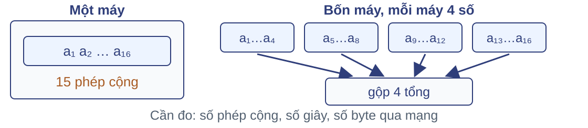
Chia 16 số cho 4 máy thì số phép cộng vẫn là 15, nhưng 4 máy cộng cùng lúc nên công việc xong sớm hơn. Hai con số "bao nhiêu phép cộng" và "bao lâu thì xong" phải được đo riêng; ngoài ra còn lượng dữ liệu đi qua mạng, đại lượng mà Định nghĩa 01.13 tách khỏi khối lượng tính toán. Định nghĩa 02.28, với $P$ máy giống nhau: $W_P$ là tổng số phép toán cơ bản mà mọi máy thực hiện; $T_P$ là thời gian từ lúc bắt đầu tới lúc có đủ đầu ra; lượng dữ liệu là số byte hoặc số bản ghi mà các tác vụ đọc, hoặc gửi qua một đường truyền. Ba đơn vị khác nhau nên các con số không cộng được với nhau. Nhầm lẫn thường gặp: coi $W_P$ như $T_P$.
Nguồn: Định nghĩa 02.28; MMDS §2.5, tr.53–56.
Ví dụ: số phép cộng khi cộng 16 số trên 4 máy
Chỉ đếm phép cộng; mỗi tổng khởi tạo bằng phần tử đầu. Tính $W_4$.
a₁ a₂ a₃ … a₁₆
1 máy: 15 phép cộng
a₁…a₄
a₅…a₈
a₉…a₁₂
a₁₃…a₁₆
Bốn máy: 4 × 3 = 12 phép cộng
gộp 4 tổng: 3 phép cộng
tổng: 15 phép cộng
Kết luận: $W_4=4\cdot3+3=15=W_1$; bốn máy làm số phép cộng bằng một máy.
Ví dụ 02.10. Mỗi máy giữ 4 số và cộng chúng bằng 3 phép cộng, 4 máy làm $4\cdot3=12$ phép cộng; một máy cộng 4 tổng cục bộ bằng 3 phép cộng nữa. $W_4=12+3=15$, bằng $16-1=15$ phép cộng trên một máy. Khởi tạo bằng phần tử đầu, nên nhóm một phần tử không cần phép cộng. Nếu mọi tổng khởi tạo bằng 0, mỗi máy làm 4 phép cộng và bước gộp làm 4, tổng 20 thay cho 15.
Nguồn: Ví dụ 02.10.
Chi phí: cộng một dãy số
Mô hình: chỉ đếm phép cộng; khởi tạo tổng bằng phần tử đầu.
Bước Số lần Chi phí mỗi lần Đóng góp
Cộng cục bộ $P$ máy $n/P-1$ $P(n/P-1)=n-P$ Gộp tổng cục bộ 1 $P-1$ $P-1$ Tổng $W_P=n-1$
Giả thiết: $n\geq P\geq1$, $P$ chia hết $n$, số học chính xác.
Kết luận: $W_P=n-1$, không phụ thuộc $P$ (Mệnh đề 02.29).
Một dãy $\ell\ge1$ số khởi tạo bằng phần tử đầu cần $\ell-1$ phép cộng, nên hai cột chi phí đúng với $\ell=n/P$ và $\ell=P$. Cộng hai đóng góp: $(n-P)+(P-1)=n-1$. Tổng khối lượng tính toán không đổi vì mỗi phép cộng gộp hai giá trị thành một, nên từ $n$ số xuống một tổng luôn cần $n-1$ phép cộng, dù phép cộng diễn ra ở máy nào. Nếu mọi tổng khởi tạo bằng 0, $W_P=n+P$, phụ thuộc $P$; với $n=16$, $P=4$ là 20 thay cho 15. Trong cả hai cách đếm, song song hóa không giảm tổng khối lượng tính toán; nó chia công việc cho nhiều máy.
Nguồn: Mệnh đề 02.29 và chứng minh.
Chi phí: thời gian của một pha
Mô hình: mọi tác vụ sẵn sàng từ đầu pha; mỗi máy chạy lần lượt, không nghỉ, không lỗi.
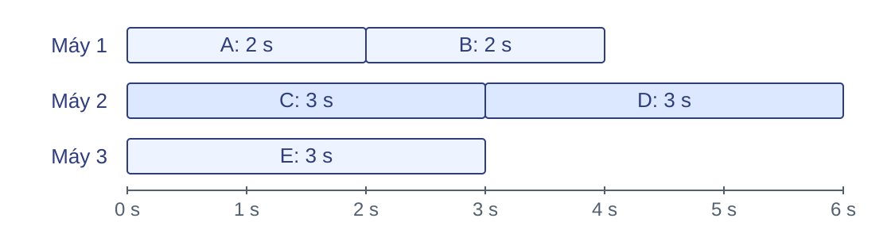
$t_u$ là tổng thời gian các tác vụ giao cho máy $u$ (Định nghĩa 02.30).
$T_{\text{pha}} = \max_u t_u = \max(4,\,6,\,3) = 6\,\text{s}$
Định nghĩa 02.30: thời gian của pha là giá trị lớn nhất của tải các máy, và thời gian của cả công việc là tổng thời gian các pha nối tiếp. Ví dụ 02.11: máy 1 chạy A, B, mỗi tác vụ 2 giây; máy 2 chạy C, D, mỗi tác vụ 3 giây; máy 3 chạy E, 3 giây; tải $t_1=4$, $t_2=6$, $t_3=3$. Thời gian của pha không phải tổng 13 giây, vì các máy chạy đồng thời; cũng không phải tác vụ dài nhất 3 giây, vì máy 2 chạy hai tác vụ nối tiếp. Giao lại A, C cho máy 1 và B, D cho máy 2 cho tải 5, 5, 3 và thời gian pha 5 giây với cùng năm tác vụ: giảm thời gian pha là cân bằng tải.
Nguồn: Định nghĩa 02.30, Ví dụ 02.11; MMDS §2.5.2, tr.55–56.
Ví dụ: thời gian cộng 16 số trên bốn máy
$\tau>0$: thời gian một phép cộng; mỗi máy nhận 4 số. Tính $T_4$.
Mô hình: hai pha nối tiếp; bỏ đọc ghi, truyền, điều phối.
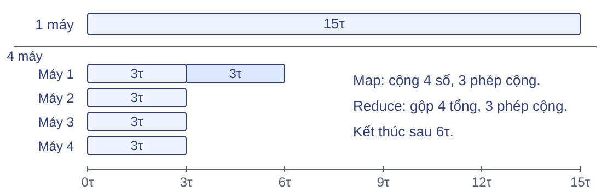
$T_{\text{Map}}=3\tau,\qquad T_{\text{Reduce}}=3\tau$
Giả thiết: dữ liệu đã nằm tại mỗi máy; một tác vụ Reduce gộp tuần tự bốn tổng.
Ví dụ 02.12. Pha Map: bốn máy cộng đồng thời, mỗi máy 3 phép cộng, $T_{\text{Map}}=3\tau$. Pha Reduce: một máy gộp 4 tổng bằng 3 phép cộng, $T_{\text{Reduce}}=3\tau$. Cả công việc $T_4=6\tau$, so với $T_1=15\tau$ trên một máy. Tổng khối lượng tính toán vẫn là 15 phép cộng; thời gian giảm vì 12 phép cộng của pha Map diễn ra trong $3\tau$. Trên hình, khoảng từ $6\tau$ đến $15\tau$ là thời gian tiết kiệm được so với một máy.
Nguồn: Ví dụ 02.12.
Số máy cho thời gian nhỏ nhất
Giả thiết: như Mệnh đề 02.29; mỗi phép cộng $\tau$ giây; một máy gộp tuần tự; bỏ đọc ghi, truyền, điều phối.
Mệnh đề. $T_P=\left(\dfrac nP-1\right)\tau+(P-1)\tau$ (Mệnh đề 02.31).
Hệ quả. $T_P\ge(2\sqrt n-2)\tau$, dấu bằng khi và chỉ khi $P=\sqrt n$.
$P$ 1 2 4 8 16
$T_P$ với $n=16$ $15\tau$ $8\tau$ $6\tau$ $8\tau$ $15\tau$
Kết luận: nhỏ nhất ở $P=4=\sqrt{16}$, đúng $6\tau=(2\cdot4-2)\tau$.
Chứng minh Mệnh đề 02.31: mỗi máy làm $n/P-1$ phép cộng, nên $T_{\text{Map}}=\max_u t_u=(n/P-1)\tau$; pha gộp chỉ một máy làm $P-1$ phép cộng, nên $T_{\text{Reduce}}=(P-1)\tau$; theo Định nghĩa 02.30, $T_P$ là tổng hai pha. Hệ quả 02.32: theo bất đẳng thức giữa trung bình cộng và trung bình nhân của hai số dương $n/P$ và $P$, $n/P+P\ge2\sqrt n$, dấu bằng khi và chỉ khi $P=\sqrt n$; thay vào được $T_P=(n/P+P-2)\tau\ge(2\sqrt n-2)\tau$. Dấu bằng đạt được khi $\sqrt n$ nguyên. Hai trường hợp biên cho cùng giá trị $(n-1)\tau$: $P=1$, một máy làm hết; $P=n$, một máy gộp hết. Thêm máy quá $\sqrt n$ làm tăng thời gian, vì phần gộp tuần tự dài thêm nhanh hơn phần cục bộ ngắn đi. Pha gộp tuần tự ứng với một tác vụ Reduce duy nhất nhận mọi tổng cục bộ, như khi dùng khóa chung $g$; gộp theo cây cho một lịch khác.
Nguồn: Mệnh đề 02.31, Hệ quả 02.32 và chứng minh.
Chi phí: thời gian của cả công việc
Nhắc lại: $T_P=\sum_{\text{pha}}T_{\text{pha}}$ (Định nghĩa 02.30).
Giả sử $P=4$, bốn pha nối tiếp: điều phối, Map, truyền và nhóm, Reduce. Tính $T_4$.
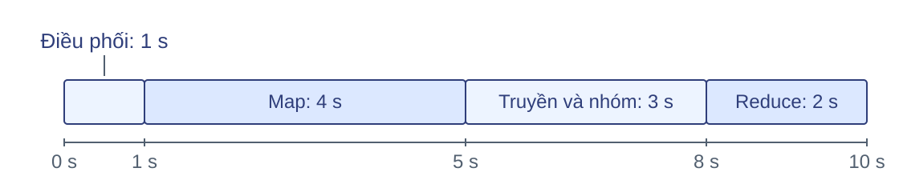
$T_4 = 1+4+3+2 = 10\,\text{s}$
Mô hình: mỗi pha kết thúc khi máy cuối cùng xong; các pha nối tiếp, không lỗi.
$T_P$ là thời gian từ lúc bắt đầu tới khi có đủ đầu ra trên $P$ máy. Ví dụ 02.13: pha Map 4 giây đã là thời gian của máy chậm nhất. Các mốc là 0, 1, 5, 8, 10 giây; mỗi pha bắt đầu đúng lúc pha trước kết thúc. Pha Map gồm thời gian đọc đầu vào, pha giữa gồm truyền và sắp xếp, pha Reduce gồm ghi đầu ra. Hệ thống thật cho các pha chồng lên nhau một phần: việc chuyển đầu ra của các tác vụ Map đã xong có thể chạy song song với các tác vụ Map khác; khi đó tổng các pha là một cận trên của thời gian. $T_P$ khác tổng khối lượng tính toán $W_P$.
Nguồn: Ví dụ 02.13; trang chiếu MMDS, tr.28.
Chi phí truyền thông
Mô hình: chi phí truyền thông (communication cost) của tác vụ là kích thước đầu vào; của công việc là tổng mọi tác vụ.
$I$: tổng đầu vào các tác vụ Map; $H$: tổng đầu vào các tác vụ Reduce.
$C = I + H = 100 + 40 = 140\,\text{MB}$
Lưu ý: trang chiếu MMDS, CS246 dùng $I+2H+O$; với $O=5$ MB là 185 MB.
Định nghĩa 02.33 và Ví dụ 02.14: giả sử các tác vụ Map đọc tổng cộng $I=100$ MB và các tác vụ Reduce nhận $H=40$ MB. $I$ được tính cả khi tác vụ Map đọc khối nằm ngay trên máy của nó, vì dữ liệu vẫn phải chuyển từ đĩa vào bộ nhớ. $H$ là đầu ra của các tác vụ Map sau Combine; đầu ra của các tác vụ Reduce không được tính. Quy ước $I+2H+O=C+H+O$ của trang chiếu đếm đọc ghi của mọi tiến trình: mỗi tệp trung gian được đếm khi Map ghi và khi Reduce đọc. Bài dùng $C=I+H$ của sách.
Nguồn: Định nghĩa 02.33, Ví dụ 02.14, Nhận xét 02.34; MMDS §2.5.1, tr.53–55; trang chiếu MMDS, tr.38–39; CS246, trang chiếu 67–68.
Chi phí: lượng truyền khi có Combine
$d_1$ = “mèo chó mèo”, $d_2$ = “chó chim”, mỗi văn bản một tác vụ Map; giả sử mỗi cặp 16 byte.
Phương án Cặp gửi tới Reduce $H$
Không Combine d₁: (mèo,1), (chó,1), (mèo,1) 5 × 16 = 80 byte Có Combine d₁: (mèo,2), (chó,1) 4 × 16 = 64 byte
Mệnh đề. Không Combine: $H=\sum_i\ell_i$; Combine một lần mỗi khóa trong mỗi tác vụ: $H=\sum_j\lvert\mathcal W(X_j)\rvert$ (Mệnh đề 02.35).
Kết luận: $H$ giảm từ 80 còn 64 byte (20%); $I$ không đổi nên $C$ giảm 16 byte.
Ví dụ 02.15. $\mathcal W(X_j)$ là tập từ xuất hiện trong phần của tác vụ Map $j$. Không Combine, $H=\ell_1+\ell_2=3+2=5$ cặp; có Combine, $H=\lvert\{\text{mèo},\text{chó}\}\rvert+\lvert\{\text{chó},\text{chim}\}\rvert=4$ cặp. Với mọi cách hệ thống gọi Combine, $H$ nằm giữa hai số đó (Mệnh đề 02.35(c)). Ở ma trận $4\times4$, mỗi khối có hai khóa hàng, nên $H$ giảm từ 16 xuống 8 cặp. Combine có lợi nhiều khi mỗi tác vụ Map có ít khóa phân biệt so với số cặp nó phát, như từ phổ biến trong một khối lớn; đổi lại nó tốn thêm phép cộng ở pha Map. $C$ nhỏ không suy ra $T_P$ nhỏ: giao toàn bộ công việc cho một tác vụ làm $C$ nhỏ nhất nhưng thời gian lớn.
Nguồn: Mệnh đề 02.35, Ví dụ 02.15, Nhận xét 02.36; MMDS §§2.5.1–2.5.2.
Chi phí: thời gian truyền một thông điệp
Mô hình: $Q$ là lượng truyền (MB), $B$ là băng thông (MB/s), $\lambda$ là độ trễ khởi đầu (giây).
Thông điệp
Q = 100 MB
1 đường truyền
B = 50 MB/s
λ = 0,02 s
Máy nhận
chờ 2,02 s
Giả sử $Q=100$ MB, $B=50$ MB/s, $\lambda=0{,}02$ s, đường truyền dành riêng:
$T_{\text{truyền}} \approx \lambda + \dfrac{Q}{B} = 0{,}02 + \dfrac{100}{50} = 2{,}02\,\text{s}$
Định nghĩa 02.37: băng thông (bandwidth) $B$ là lượng dữ liệu tối đa đường truyền chuyển được trong một giây; trong $T$ giây, đường truyền chuyển không quá $BT$ MB. Độ trễ khởi đầu (latency) $\lambda$ là thời gian từ lúc gửi tới lúc byte đầu tiên tới nơi. Mô hình có hai thành phần: $\lambda$ không phụ thuộc lượng dữ liệu và chi phối khi thông điệp nhỏ; $Q/B$ tỷ lệ với lượng dữ liệu và chi phối khi thông điệp lớn. Ở Ví dụ 02.16, phần $Q/B=2$ giây chiếm hơn 99% tổng. Cần phân biệt MB với Mb: một gigabit mỗi giây là 125 MB/s. $C$ đếm lượng dữ liệu nhưng không cho số giây; mô hình này đổi lượng dữ liệu trên một đường truyền thành thời gian.
Nguồn: Định nghĩa 02.37, Ví dụ 02.16.
Chi phí: đường nối dùng chung
Băng thông $B$ của đường nối dùng chung là của cả đường, chia cho mọi luồng đi qua.
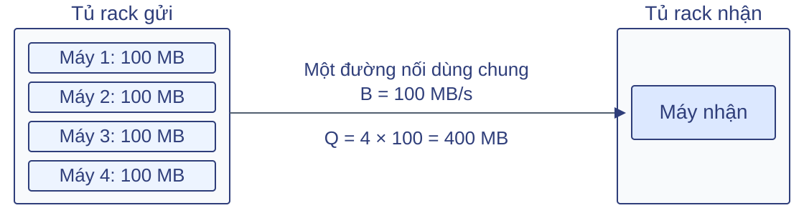
$T_{\text{truyền}} \geq \dfrac{Q}{B} = \dfrac{400}{100} = 4\,\text{s}$
Chuyển đủ $Q$ MB qua một đường nối cần ít nhất $Q/B$ giây (Mệnh đề 02.38).
Kết luận: xử lý gần dữ liệu giảm $Q$ trên đường nối này, nên giảm cận $Q/B$.
Chứng minh Mệnh đề 02.38: gọi $T$ là thời gian chuyển đủ $Q$ MB; trong $T$ giây đường nối chuyển không quá $BT$ MB, nên $BT\ge Q$, tức $T\ge Q/B$. Ví dụ 02.17: giả sử bốn máy ở một tủ, mỗi máy gửi 100 MB tới một máy ở tủ khác qua đường nối liên tủ 100 MB/s cho cả đường; $Q=400$ MB nên cần ít nhất 4 giây. Hiểu nhầm 100 MB/s là băng thông của mỗi máy cho 1 giây, nhỏ hơn cận dưới. Độ trễ, tranh chấp và xử lý có thể làm thời gian dài hơn cận. Nếu tác vụ Map chạy trên máy có bản sao của khối, khối không đi qua đường nối liên tủ; việc đọc khối từ đĩa vẫn nằm trong $I$.
Nguồn: Mệnh đề 02.38, Ví dụ 02.17; MMDS §2.1.1, tr.22–23.
Mức tăng tốc
Mức tăng tốc (speedup) $S_P=T_1/T_P$, với cùng bài toán, đầu vào, đầu ra và phạm vi đo.
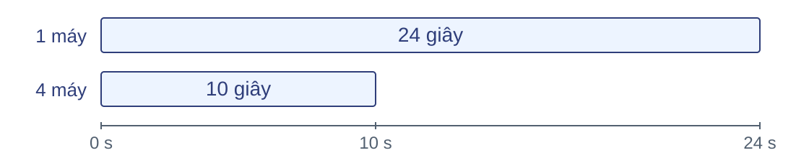
$S_4 = \dfrac{24}{10} = 2{,}4, \qquad \text{cộng 16 số: } S_4=\dfrac{15\tau}{6\tau}=2{,}5$
Kết luận: cả hai nhỏ hơn $P=4$ do điều phối, truyền hoặc gộp tuần tự.
Định nghĩa 02.39. $S_P>1$ nghĩa là chạy trên $P$ máy nhanh hơn; $S_P=P$ là tăng tốc tuyến tính, khi thời gian chia đều cho $P$ máy mà không có phần nào thêm vào. Điều kiện cùng phạm vi đo ngăn so sánh sai: nếu $T_1$ gồm cả đọc đầu vào mà $T_P$ thì không, $S_P$ phóng đại lợi ích. Ví dụ 02.18: lịch bốn pha có $T_4=10$ giây, giả sử cùng công việc trên một máy mất $T_1=24$ giây. Mức tăng tốc nhỏ hơn $P$ khi công việc có phần truyền, phần gộp tuần tự, điều phối hoặc lệch tải, vì các phần đó không chia đều cho $P$ máy (Nhận xét 02.13, Hệ quả 02.32, Mệnh đề 02.38).
Nguồn: Định nghĩa 02.39, Ví dụ 02.18.
Câu hỏi về thời gian và mức tăng tốc
Đại lượng Dữ kiện
Điều phối 1 s Tải Map mỗi máy ($P=3$) 2 s / 3 s / 5 s Lượng truyền $Q$ 120 MB Băng thông $B$ 40 MB/s Reduce 2 s Một máy, $T_1$ 22 s
Giả thiết: các pha nối tiếp; bỏ độ trễ, chi phí nhóm.
Câu hỏi:
Tính $T_{\text{Map}}$ và $T_{\text{truyền}}$.
Tính $T_3$ và $S_3$.
Combine giảm $Q$ còn 40 MB, máy Map chậm nhất thêm 1 s: tính $T'_3$ và thời gian tiết kiệm.
Dữ kiện của Ví dụ 02.19. Tải Map 2, 3, 5 giây là tổng thời gian các tác vụ Map trên từng máy; $T_{\text{Map}}$ là thời gian chờ máy chậm nhất. Lời giải: $T_{\text{Map}}=\max(2,3,5)=5$ giây; $T_{\text{truyền}}=120/40=3$ giây; $T_3=1+5+3+2=11$ giây; $S_3=22/11=2$. Câu 3: $T_{\text{Map}}=6$ giây, $T_{\text{truyền}}=40/40=1$ giây; $T'_3=1+6+1+2=10$ giây, nhanh hơn 1 giây; $S'_3=22/10=2{,}2$. Combine tiết kiệm 2 giây truyền và tốn thêm 1 giây Map. Các mốc của phương án có Combine là 0, 1, 7, 8, 10 giây. Lỗi thường gặp: cộng tải ba máy được $1+10+3+2=16$ giây, sai theo Định nghĩa 02.30; bỏ quên pha điều phối.
Nguồn: Ví dụ 02.19.
5. Hệ thống thực thi MapReduceĐọc thêm Muốn hiểu thời gian chạy và cách phục hồi, phải theo dữ liệu từ phần đầu vào qua shuffle tới Reduce.
Phần đầu vào · HDFS · Hàm phân phối · Shuffle · Phục hồi khi máy hỏng
Ví dụ 02.13 lấy thời gian điều phối, truyền và nhóm làm dữ kiện. Các thời gian đó sinh ra từ ba việc của hệ thống: giao tác vụ cho máy, chuyển dữ liệu trung gian tới đúng tác vụ Reduce, và làm lại phần việc bị mất khi máy hỏng. Với một triệu máy, mỗi ngày khoảng 1000 máy hỏng, nên việc thứ ba xảy ra thường xuyên.
Phần đầu vào và tác vụ Map
Đọc thêm
Nhu cầu: thời gian chạy phụ thuộc cách giao tác vụ và chuyển dữ liệu.
Phần đầu vào $X_j$ xác định dữ liệu một tác vụ Map phải đọc.
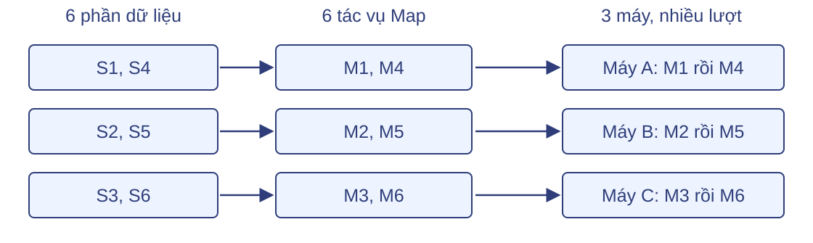
Lưu ý: phần đầu vào là đơn vị chia việc; khối DFS là đơn vị lưu trữ.
Định nghĩa 02.40: chương trình người dùng khởi tạo một tiến trình điều phối (Master) và nhiều tiến trình thực thi (Worker); tiến trình điều phối tạo $m$ tác vụ Map và $r$ tác vụ Reduce rồi giao chúng cho các tiến trình thực thi. Mỗi tác vụ Map được giao một hoặc nhiều khối của tệp đầu vào. Sáu phần $\mathrm S_1,\ldots,\mathrm S_6$ trên hình, tức $X_1,\ldots,X_6$, cho sáu tác vụ trên ba máy; máy xong tác vụ trước thì nhận tác vụ sau. Số tác vụ Map không phải số máy. Ngoài lợi ích cân bằng tải, tác vụ nhỏ giúp phục hồi nhanh, vì một máy hỏng chỉ làm mất các tác vụ nhỏ.
Nguồn: Định nghĩa 02.40; MMDS §2.2.5, tr.28–29; trang chiếu MMDS, tr.27–28.
Vai trò của HDFS trong MapReduce
Đọc thêm
Hệ thống tệp phân tán Hadoop (HDFS) lưu đầu vào và kết quả, mỗi khối nhiều bản sao.
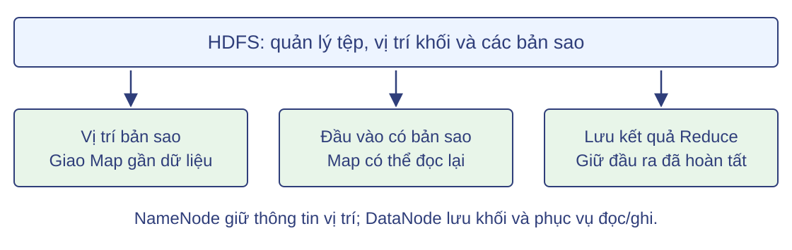
HDFS giữ dữ liệu; tiến trình điều phối giao, theo dõi và chạy lại tác vụ.
Theo Định nghĩa 02.3, hệ thống tệp phân tán lưu mỗi khối thành nhiều bản sao và nút chủ giữ vị trí các khối; HDFS là bản cài đặt mã nguồn mở, với NameNode đóng vai nút chủ. Tiến trình điều phối dùng vị trí bản sao để ưu tiên giao tác vụ Map cho máy có bản sao khối đầu vào. Khi phải chạy lại Map, đầu vào còn bản sao trên DFS để đọc lại. Đầu ra Reduce đã xong nằm trên DFS, có bản sao; đầu ra Map trung gian nằm trên đĩa cục bộ, không có bản sao. Tiến trình điều phối khác nút chủ: nút chủ giữ vị trí các khối của tệp, tiến trình điều phối giữ trạng thái các tác vụ của một công việc.
Nguồn: Định nghĩa 02.3, 02.40; MMDS §2.1.2, §2.2.5; trang chiếu MMDS, tr.24.
Giao tác vụ Map gần dữ liệu
Đọc thêm
Ưu tiên máy có bản sao; rồi máy cùng tủ; rồi tủ khác.
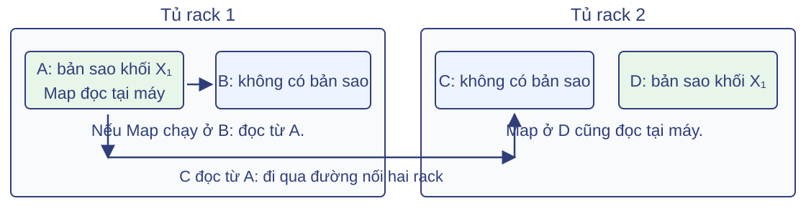
A và D đều đọc được khối của $X_1$ tại máy; bản sao không làm tăng số bản ghi đầu vào.
Trên hình, khối của phần đầu vào $X_1$ có bản sao ở máy A và máy D, nên tác vụ Map chạy ở một trong hai máy đó đọc tại chỗ; chạy ở máy B thì đọc từ A qua mạng của tủ 1. Theo thứ tự ưu tiên, máy C đọc bản ở D cùng tủ 2; nhãn "C đọc từ A" là trường hợp bản ở D không dùng được, khi đó dữ liệu đi qua đường nối liên tủ. Tác vụ Map đọc một bản, nên hai bản sao không làm tăng số bản ghi đầu vào.
Nguồn: phần đọc thêm của ghi chú, mục giao tác vụ; trang chiếu MMDS, tr.24; MMDS §2.1.2.
Chia đầu ra Map theo hàm phân phối
Đọc thêm
Hai văn bản, hai Map, hai Reduce; tạm bỏ Combine để thấy từng cặp.
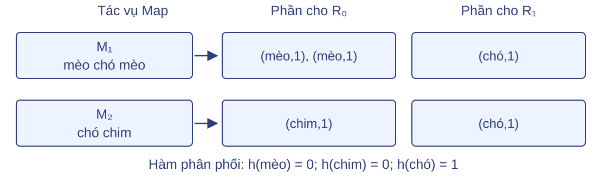
Mỗi Map ghi một tệp trung gian cho mỗi Reduce trên đĩa cục bộ.
Ví dụ 02.20: $r=2$, giả sử $h(\text{mèo})=h(\text{chim})=0$, $h(\text{chó})=1$, không Combine. Hàm phân phối được áp tại chính máy chạy Map: mỗi cặp được ghi vào tệp trung gian của tác vụ Reduce $h(k)$. Mọi tác vụ dùng cùng một hàm $h$, nên hai cặp (chó, 1) từ hai máy cùng tới $\mathrm R_1$, đúng giả thiết thứ tư của Mệnh đề 02.11. Mỗi tác vụ Map ghi $r$ tệp trung gian; hai tác vụ Map cho $m\cdot r=4$ tệp, năm cặp, mỗi cặp ở đúng một tệp. Tiến trình điều phối được báo vị trí, kích thước và tác vụ đích của mỗi tệp.
Nguồn: Định nghĩa 02.40, Ví dụ 02.20; MMDS §2.2.5, tr.28–29.
Chuyển dữ liệu trung gian (shuffle)
Đọc thêm
Mỗi tác vụ Reduce lấy các phần dành cho nó từ mọi máy Map.
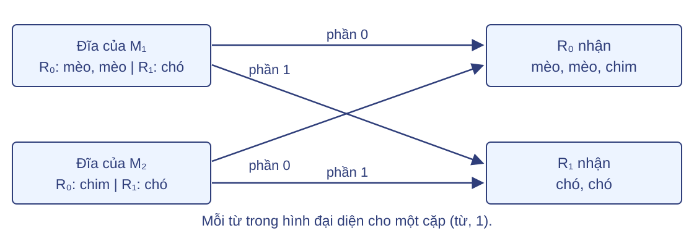
R₀ nhận nhiều khóa; mọi cặp cùng khóa vẫn về cùng một Reduce.
Việc mỗi tác vụ Reduce lấy các phần dành cho nó từ mọi máy Map gọi là chuyển dữ liệu trung gian (shuffle). $\mathrm R_0$ lấy tệp số 0 từ cả hai máy Map và nhận (mèo, 1), (mèo, 1), (chim, 1); $\mathrm R_1$ nhận (chó, 1), (chó, 1). Đây là bước đi qua mạng khi máy gửi và máy nhận khác nhau; CS246 ghi rằng trong thực tế bước nhóm theo khóa là nút cổ chai của công việc. Nhận đủ dữ liệu chưa thay cho bước nhóm: $\mathrm R_0$ nhận hai khóa và vẫn phải tách chúng thành hai nhóm.
Nguồn: Ví dụ 02.20; CS246, trang chiếu 46.
Nhóm theo khóa và đọc lần lượt
Đọc thêm
Hệ thống sắp xếp và ghép dữ liệu; hàm Reduce xử lý từng nhóm khóa.
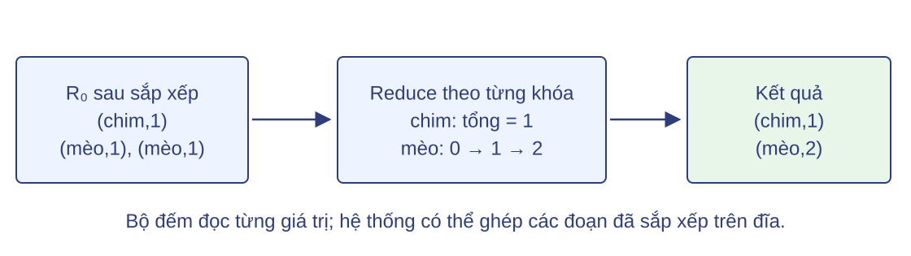
Với đếm từ, Reduce chỉ cần một biến tổng cho khóa đang xử lý.
Lưu ý: nhóm đầy đủ về mặt logic không đòi giữ cả nhóm trong bộ nhớ.
Hệ thống sắp xếp các cặp đã nhận theo khóa, nên các cặp cùng khóa đứng liền nhau, rồi gọi Reduce cho từng đoạn. Hàm Reduce của đếm từ đọc các giá trị lần lượt và giữ một biến tổng, đi từ 0 lên 1 rồi 2 với mèo. Danh sách $L_k$ là một đối tượng logic: nhóm đủ phần tử nhưng không bắt buộc nằm cả trong bộ nhớ. Khi dữ liệu trung gian không vừa bộ nhớ, việc sắp xếp và ghép làm trên đĩa và tốn đọc ghi, phần đã được tính vào pha chuyển và nhóm ở Ví dụ 02.13.
Nguồn: phần đọc thêm của ghi chú, sau Ví dụ 02.20.
Theo dõi trạng thái tác vụ
Đọc thêm
Tiến trình điều phối (Master) theo dõi mỗi tác vụ và máy thực thi nó.
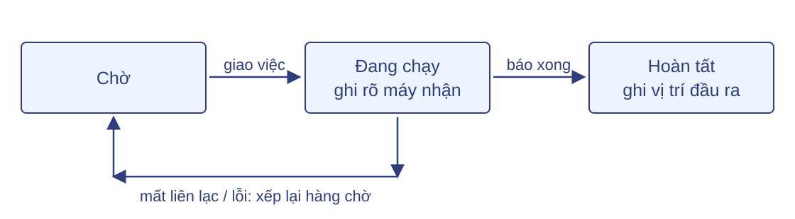
Máy thực thi báo khi xong một tác vụ; tiến trình điều phối giao cho nó tác vụ khác.
Định nghĩa 02.40: mỗi tác vụ ở một trong ba trạng thái, chờ (idle), đang chạy trên một tiến trình thực thi xác định, hoặc xong; trạng thái Hoàn tất trên hình là trạng thái xong. Tiến trình điều phối định kỳ kiểm tra liên lạc với các tiến trình thực thi; mất liên lạc quá hạn được xử lý như máy hỏng, và tác vụ đang chạy ở đó trở về hàng chờ. Tiến trình điều phối khác nút chủ của DFS: nút chủ giữ vị trí các khối, tiến trình điều phối giữ trạng thái các tác vụ.
Nguồn: Định nghĩa 02.40; MMDS §§2.2.5–2.2.6, tr.28–30.
Nơi lưu dữ liệu và cách phục hồi
Đọc thêm
Dữ liệu Nơi lưu Khi mất máy lưu
Đầu vào DFS, có bản sao Đọc bản sao khác Đầu ra Map Đĩa cục bộ của máy chạy Map Mất; chạy lại Map để tạo lại Đầu ra Reduce đã xong DFS, có bản sao Còn; đọc bản sao khác
Giả thiết: còn ít nhất một bản sao đọc được của mỗi khối đầu vào, mỗi tệp đầu ra.
Đầu vào và đầu ra cuối nằm trên hệ thống tệp phân tán, có bản sao; đầu ra Map trung gian nằm trên đĩa cục bộ của máy chạy Map, không có bản sao. Khác biệt đó quyết định cách phục hồi: hai tác vụ cùng đã xong có cách phục hồi khác nhau. Mất đầu ra Map buộc chạy lại Map; đầu ra Reduce đã xong được giữ khi bản sao còn đọc được. Bảng là cơ sở của Mệnh đề 02.41 về phần phải chạy lại khi máy chạy Map hoặc máy chạy Reduce hỏng.
Nguồn: Định nghĩa 02.3, 02.40; bảng nơi lưu trước Mệnh đề 02.41; MMDS §§2.2.5–2.2.6.
Phục hồi khi máy chạy Map hỏng
Đọc thêm
M₁ đã xong trên máy A, nhưng R₀ chưa lấy tệp số 0 từ A.
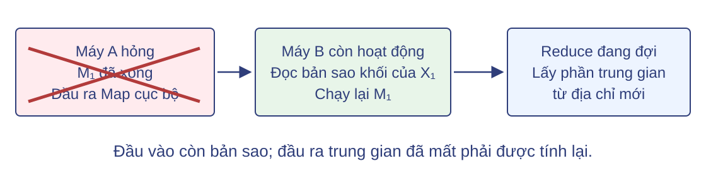
Tiến trình điều phối đưa M₁ về chờ, giao máy B chạy lại và báo vị trí đầu ra mới.
Lưu ý: Map đã xong vẫn phải chạy lại khi đầu ra cục bộ mất.
Mệnh đề 02.41(a) trên Ví dụ 02.21: máy chạy Map hỏng thì mọi tác vụ Map đã giao cho máy đó, kể cả tác vụ đã xong, trở về trạng thái chờ và chạy lại trên máy khác. $\mathrm M_1$ chạy lại trên máy B, đọc một bản sao của khối chứa $d_1$, ghi lại tệp cho $\mathrm R_0$ gồm (mèo, 1), (mèo, 1) và tệp cho $\mathrm R_1$ gồm (chó, 1). Tiến trình điều phối báo cho $\mathrm R_0$ vị trí mới. $\mathrm R_1$ đã xong, đầu ra nằm trên DFS, nên không chạy lại và không lấy tệp số 1 của lần chạy mới; chó không bị đếm 3 dù $\mathrm M_1$ chạy hai lần. "Xong" chỉ nói về trạng thái của tác vụ, còn sản phẩm của nó nằm ở nơi vừa mất.
Nguồn: Mệnh đề 02.41, Ví dụ 02.21; MMDS §2.2.6, tr.30.
Phục hồi khi máy chạy Reduce hỏng
Đọc thêm
R₀ chưa xong; R₁ đã ghi O₁ lên HDFS.
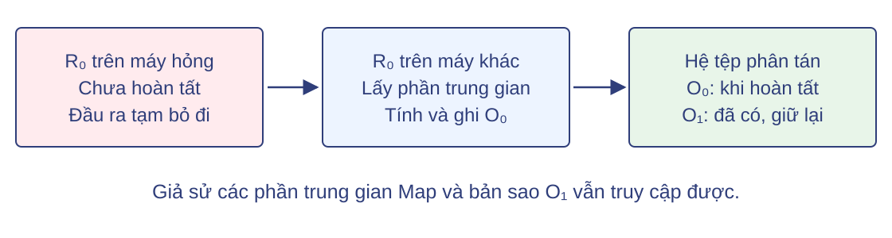
R₀ mới lấy lại các tệp trung gian và tính Reduce lại; các Map không phải chạy lại.
Mệnh đề 02.41(b): máy chạy Reduce hỏng thì các tác vụ Reduce đang chạy trên máy đó trở về trạng thái chờ và được chạy lại; tác vụ Reduce đã xong không phải chạy lại. Tác vụ đang chạy chưa ghi xong; đầu vào của nó là các tệp trung gian, vẫn nằm trên các máy Map, nên chạy lại tác vụ ở máy khác là đủ. Tệp đầu ra $\mathrm O_1$ của $\mathrm R_1$ đã nằm trên DFS, có bản sao, nên được giữ. Một máy chạy cả tác vụ Map lẫn tác vụ Reduce mà hỏng thì áp đồng thời câu (a) và câu (b).
Nguồn: Mệnh đề 02.41 và chứng minh; MMDS §2.2.6, tr.30.
Nhiều lần thực thi của một tác vụ
Đọc thêm
Tình huống Cách xử lý
Máy hỏng, mất liên lạc Giao lại trên máy khác Máy chậm, gần cuối pha Chạy bản dự phòng; nhận bản xong trước
Tác vụ Map, Reduce có tính chặn (blocking property): chỉ giao đầu ra khi đã xong.
Kết luận: chạy lại không tính trùng (Mệnh đề 02.43).
Định nghĩa 02.42: một tác vụ có tính chặn khi nó chỉ giao đầu ra cho tác vụ kế tiếp khi chính nó đã xong; tệp trung gian của một tác vụ Map chỉ được báo cho tiến trình điều phối, và do đó chỉ được tác vụ Reduce lấy, khi tác vụ Map đã xong. Mệnh đề 02.43 cần thêm hàm xác định và giả thiết mỗi tác vụ được chấp nhận đúng một lần chạy đã xong. Phản ví dụ: bỏ tính chặn, một tác vụ Map giao (mèo, 1) đầu tiên rồi hỏng, lần chạy lại giao cả hai cặp, và mèo được đếm 3; bỏ "chấp nhận một kết quả", hai lần chạy xong của cùng tác vụ Reduce đều được ghi và đầu ra có hai cặp (chó, 2).
Nguồn: Định nghĩa 02.42, Mệnh đề 02.43, Nhận xét 02.44; MMDS tr.43, tr.75; trang chiếu MMDS, tr.29.
Phạm vi chống chịu lỗi
Đọc thêm
Sự cố Phần phải làm lại
Máy chạy Map hỏng Mọi tác vụ Map của máy đó, kể cả tác vụ đã xong Máy chạy Reduce hỏng Các tác vụ Reduce đang chạy trên máy đó Tiến trình điều phối hỏng Cả công việc
Giả thiết: mô hình một tiến trình điều phối; còn bản sao đọc được và máy thay thế.
Bảng là ba câu của Mệnh đề 02.41. Câu (c): trạng thái và vị trí của mọi tác vụ chỉ nằm ở tiến trình điều phối; mất nó thì không còn thông tin để biết phần nào đã xong, nên cả công việc khởi động lại. Mệnh đề nói phần nào phải chạy lại; việc chạy lại cho kết quả đúng là Mệnh đề 02.43. Khi các bản sao của một khối nằm ở ít nhất hai tủ, mất một tủ vẫn còn bản sao. Cụm thực hành sáu container trên một máy không mô phỏng được hỏng máy độc lập.
Nguồn: Mệnh đề 02.41; MMDS §2.2.6, tr.30; trang chiếu MMDS, tr.26; CS246, trang chiếu 47.
Câu hỏi về phục hồi khi máy hỏng
Đọc thêm
Câu hỏi: trên ví dụ hai Map, hai Reduce.
R₀ và R₁ lần lượt lấy phần nào từ M₁ và M₂? M₁ xong trên A; A hỏng trước khi R₀ lấy dữ liệu. Phần nào phải tính lại? R₁ đã ghi O₁ lên HDFS rồi máy chạy R₁ hỏng. Có cần chạy lại R₁? Lời giải. (1) $\mathrm R_0$ lấy phần 0 của $\mathrm M_1$ và $\mathrm M_2$: hai cặp mèo và một cặp chim; $\mathrm R_1$ lấy phần 1 của hai Map: hai cặp chó. (2) Đầu ra cục bộ của $\mathrm M_1$ không truy cập được, nên $\mathrm M_1$ chạy lại từ bản sao đầu vào và $\mathrm R_0$ lấy dữ liệu ở vị trí mới (Mệnh đề 02.41(a)). (3) Không: $\mathrm R_1$ đã xong và $\mathrm O_1$ nằm trên HDFS, có bản sao (Mệnh đề 02.41(b)). Câu trả lời phải viện dẫn nơi lưu dữ liệu và trạng thái tác vụ.
Nguồn: Ví dụ 02.20, 02.21; Mệnh đề 02.41.
6. Thực hành Hadoop với Docker ComposeThực hành Muốn chạy đếm từ trên một cụm Hadoop sáu container, phải viết Map, Reduce bằng Python và đối chiếu kết quả.
Docker Compose · HDFS · Hadoop Streaming · Bộ đếm
Theo Hệ quả 02.12, đếm từ trên hai văn bản "mèo chó mèo" và "chó chim" cho chim 1, chó 2, mèo 2; theo Mệnh đề 02.35, Map phát 5 cặp và Combine gọi một lần mỗi khóa trong mỗi tác vụ còn 4 cặp. Mạch này dựng cụm Hadoop sáu container trên một máy, đưa hai văn bản lên HDFS, chạy hàm Map, Reduce và Combine viết bằng Python qua Hadoop Streaming, rồi đối chiếu kết quả và bộ đếm với phép tính tay.
Cụm Hadoop sáu container trên một máy
Thực hành
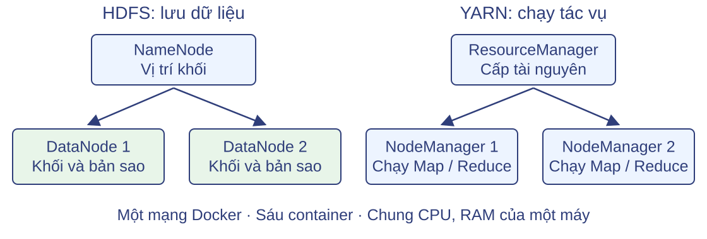
Kết quả mong đợi: chim 1 · chó 2 · mèo 2; 5 cặp ra từ Map, 4 cặp sau Combine.
Lưu ý: kiểm được tính đúng, không đo được $S_P$.
Bộ mã: Hướng dẫn thực hành · Tải mã Docker Compose .
Cụm gồm sáu container Docker trên một mạng: phần HDFS có NameNode, đóng vai nút chủ của Định nghĩa 02.3, và hai DataNode giữ khối với hệ số nhân bản 2; phần YARN có ResourceManager cấp tài nguyên và hai NodeManager chạy các tác vụ Map, Reduce. Container Docker là một tiến trình cô lập trên máy chủ; container trong giao diện YARN là đơn vị tài nguyên cấp cho một tác vụ, và số container YARN đổi theo công việc. Sáu container cùng dùng CPU, bộ nhớ và ổ đĩa của một máy, nên cụm này không đo được mức tăng tốc hay mô phỏng hỏng máy độc lập. Sinh viên cài Docker và tải bộ mã trước buổi học theo README của bộ mã.
Nguồn: Mục 5, 5.1 của ghi chú; README của bộ mã thực hành.
Khởi động bằng Docker Compose
Thực hành
Cài Docker Engine/Desktop và Compose plugin trước; giải nén bộ mã rồi vào thư mục lab.
cd hadoop-compose
docker compose pull
docker compose up -d
docker compose pspull tải image apache/hadoop:3.4.2-lean từ Docker Hub;up -d tạo 6 container nền; ps liệt kê trạng thái.
Ba lệnh theo thứ tự: pull tải ảnh apache/hadoop:3.4.2-lean về máy; up -d tạo và khởi động sáu container chạy nền theo tệp cấu hình của bộ mã; ps cho biết container nào đang chạy. Java và Hadoop nằm trong ảnh, nên máy của sinh viên chỉ cần Docker và Compose. Cụm sẵn sàng nhận công việc khi NameNode báo 2 DataNode ở trạng thái Live và ResourceManager báo 2 NodeManager ở trạng thái RUNNING.
Nguồn: Mục 5.1 của ghi chú; README của bộ mã thực hành.
Kiểm tra cụm đã sẵn sàng
Thực hành
docker compose exec namenode hdfs dfsadmin -report
docker compose exec namenode yarn node -listDấu hiệu sẵn sàng: 2 DataNode ở trạng thái Live ,RUNNING .
Giao diện web của HDFS ở 127.0.0.1:19870, của YARN ở 127.0.0.1:18088.
dfsadmin -report hỏi NameNode về các DataNode: cần thấy đúng 2 DataNode ở trạng thái Live. yarn node -list hỏi ResourceManager: cần thấy 2 NodeManager ở trạng thái RUNNING. Daemon có thể đã khởi động nhưng chưa đăng ký với NameNode hoặc ResourceManager, nên hai lệnh này được chạy trước khi nộp công việc. Hai giao diện web cho cùng thông tin: cổng 19870 cho HDFS, cổng 18088 cho YARN.
Nguồn: Mục 5.1 của ghi chú; README của bộ mã thực hành.
Hai văn bản trên HDFS
Thực hành
d1.txtmèo chó mèo d2.txtchó chim
Mỗi tệp nhỏ là một phần đầu vào: hai tệp, hai tác vụ Map. Hai bản sao không làm tăng số từ.
Script run-job.sh tự đưa data/*.txt lên HDFS bằng hdfs dfs -put.
Đây là hai văn bản của vết chạy đếm từ, nên kết quả mong đợi đã biết: chim 1, chó 2, mèo 2. Mỗi tệp nhỏ là một phần đầu vào, nên hai tệp cho $m=2$ tác vụ Map, mỗi văn bản một tác vụ như Ví dụ 02.5; tham số split.minsize bằng 128 MiB ngăn tách một tệp thành các phần nhỏ hơn. Hệ số nhân bản 2 tạo hai bản của mỗi khối, nhưng mỗi phần đầu vào được một tác vụ Map đọc một lần, đúng giả thiết thứ nhất của Mệnh đề 02.11, nên tổng số đếm không thành 10.
Nguồn: Mục 5.3 của ghi chú; run-job.sh của bộ mã thực hành.
Hàm Map bằng Python
Thực hành
import sys
# Mỗi từ phân cách bởi khoảng trắng đóng góp một lần xuất hiện.
for line in sys.stdin:
for word in line.split():
print(f"{word}\t1")Đọc từng dòng từ stdin; với mỗi từ in word TAB 1 ra stdout.
Tệp đầy đủ là mapper.py trong bộ thực hành.
Hadoop Streaming cho phép viết Map và Reduce bằng một chương trình đọc dòng từ đầu vào chuẩn và in dòng ra đầu ra chuẩn. mapper.py là hàm Map của Thuật toán 02.9: mỗi dòng từ TAB 1 nó in là một cặp trung gian $(w,1)$; một dòng có $\ell$ từ cho $\ell$ dòng in ra. Mapper không tự đọc tệp; việc chia phần đầu vào và cấp dòng là việc của hệ thống. Mapper tách theo khoảng trắng và giữ chữ hoa, dấu câu: "Mèo" và "mèo," là hai từ khác "mèo"; đây là quy tắc tách từ cố định mà bài toán đếm từ giả thiết.
Nguồn: Mục 5.2, Nhận xét 02.46 của ghi chú; mapper.py của bộ mã thực hành.
Giao diện giữa Python và Hadoop
Thực hành
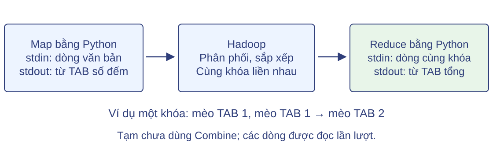
Mapper in mèo TAB 1, mèo TAB 1…; Hadoop gom các dòng cùng khóa liền nhau rồi đưa vào reducer.
Hình theo một khóa qua ba khối: mapper.py in hai dòng mèo TAB 1; Hadoop áp hàm phân phối và sắp xếp theo khóa, nên các dòng cùng khóa tới cùng một tác vụ Reduce và đứng liền nhau; reducer.py in mèo TAB 2. Một đoạn dòng liền nhau cùng khóa là một nhóm $(w,L_w)$ của Định nghĩa 02.8; reducer đọc đoạn đó lần lượt, như cách đọc $L_w$ từng phần tử của Thuật toán 02.9.
Nguồn: Mục 5.2, Nhận xét 02.46 của ghi chú.
Hàm Reduce và Combine bằng Python
Thực hành
import sys
from itertools import groupby
# Hadoop đưa các dòng cùng khóa liền nhau; đọc nhóm lần lượt.
pairs = (line.rstrip("\n").split("\t", 1) for line in sys.stdin)
for word, group in groupby(pairs, key=lambda pair: pair[0]):
total = sum(int(value) for _, value in group)
print(f"{word}\t{total}")Cộng giá trị trong nhóm; đầu vào và đầu ra cùng dạng word TAB count.
Tệp đầy đủ là reducer.py trong bộ thực hành.
groupby đọc một đoạn dòng liền nhau cùng khóa như một nhóm; tổng được cộng lần lượt qua một bộ sinh, không tạo danh sách cả nhóm trong bộ nhớ. Đầu vào và đầu ra của reducer.py cùng dạng từ TAB số, và phép cộng kết hợp, giao hoán, nên cùng tệp này dùng được làm Combine theo Mệnh đề 02.15 với $\oplus=+$, $\phi$ đồng nhất. Hadoop có thể gọi Combine không lần, một lần hay nhiều lần; đầu ra cuối không đổi.
Nguồn: Mục 5.2, Nhận xét 02.46 của ghi chú; reducer.py của bộ mã thực hành.
Nộp công việc MapReduce
Thực hành
docker compose exec -T namenode bash /work/run-job.shBốn dòng khai báo trong script (cùng một lệnh hadoop jar):-files /work/mapper.py,/work/reducer.py · -mapper 'python3 mapper.py'-combiner 'python3 reducer.py' · -reducer 'python3 reducer.py'
Tệp run-job.sh tạo thư mục đầu vào, đưa tệp lên HDFS và chọn thư mục đầu ra mới.
run-job.sh chờ HDFS sẵn sàng, tạo một thư mục đầu vào mới, đưa data/d1.txt và data/d2.txt lên HDFS, rồi nộp một lệnh hadoop jar của Hadoop Streaming. Bốn dòng trên là tham số của cùng lệnh đó, không phải các lệnh độc lập; -files gửi mapper.py và reducer.py tới nơi chạy tác vụ. Script đặt mapreduce.job.reduces=2, tức $r=2$. Mỗi lần chạy ghi vào một thư mục đầu ra mới, và script in nội dung các tệp part-* của thư mục đó.
Nguồn: Mục 5.3 của ghi chú; run-job.sh của bộ mã thực hành.
Đối chiếu kết quả
Thực hành
chim 1
chó 2
mèo 2Script in đường dẫn đầu ra; ghép các tệp output/part-* thu được đủ ba cặp kết quả.
Hai tác vụ Reduce cho hai tệp part-*; một tệp có thể rỗng.
Ví dụ 02.23: theo README của bộ mã, ghép các tệp part-* được ba dòng chim 1, chó 2, mèo 2; đầu ra trùng Hệ quả 02.12 và vết chạy đếm từ. Thư mục đầu ra có hai tệp vì $r=2$; mỗi tệp chứa các khóa mà hàm băm mặc định của Hadoop giao cho tác vụ Reduce tương ứng. Cách chia khóa không cần trùng một cách gán khóa cụ thể nào, vì Mệnh đề 02.11 chỉ cần $h$ là một hàm. Với nhiều tác vụ Reduce, thứ tự các khóa giữa các tệp không được quy định, nên thứ tự dòng không phải bằng chứng.
Nguồn: Mục 5.3, Ví dụ 02.23 của ghi chú; README của bộ mã thực hành.
Quan sát các bộ đếm
Thực hành
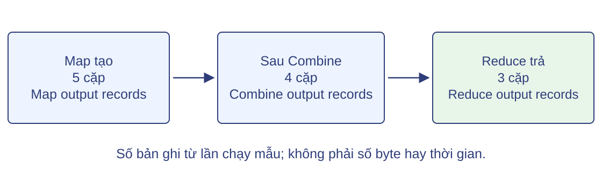
Lần chạy kiểm thử: 5 cặp ra từ Map, 4 cặp sau Combine, 3 cặp ra từ Reduce.
Ví dụ 02.23. Năm cặp ra từ Map bằng $\ell_1+\ell_2=3+2$ của Mệnh đề 02.35(a); bốn cặp sau Combine bằng $2+2$ của Mệnh đề 02.35(b), tức Combine đã gộp hai cặp (mèo, 1) của $d_1$; ba cặp ra từ Reduce là ba từ phân biệt. Mệnh đề 02.35(c) chặn số cặp tác vụ Reduce nhận giữa 4 và 5; bộ đếm Combine output records cộng dồn qua các lần gọi Combine và bằng 0 khi Hadoop không gọi Combine, nên số 4 không cố định giữa các lần chạy, còn đầu ra cuối thì cố định. Bộ đếm đo số bản ghi; muốn biết Combine làm công việc nhanh hơn bao nhiêu cần mô hình thời gian $T_P$ của Định nghĩa 02.30.
Nguồn: Ví dụ 02.23 của ghi chú; README của bộ mã thực hành.
Câu hỏi về lần chạy trên Hadoop
Thực hành
Câu hỏi: giải thích kết quả và cách kiểm chứng.
1 Xóa khai báo Combiner trong script: kết quả đếm có đổi không? 2 Với hệ số nhân bản 2, vì sao tổng số từ đếm được vẫn là 5 chứ không phải 10? 3 Bộ đếm nào kiểm hàm Map, Combine và số khóa? Chúng phải bằng bao nhiêu?
Lời giải. (1) Không: phép cộng kết hợp, giao hoán và Combine phát đúng một cặp $(w,\sum L)$, nên theo Mệnh đề 02.15 đầu ra cuối như khi không có Combine; bộ đếm Combine output records thì đổi. (2) Hệ số nhân bản tạo bản sao khối để đọc và để bền; mỗi phần đầu vào được một tác vụ Map đọc một lần, đúng giả thiết thứ nhất của Mệnh đề 02.11, nên tổng là 5. (3) Map output records bằng 5, kiểm hàm Map; Combine output records bằng 4, kiểm Combine, theo Mệnh đề 02.35(b); Reduce output records bằng 3, kiểm số khóa của bước nhóm; cùng với ba dòng chim 1, chó 2, mèo 2 của các tệp part-*.
Nguồn: Ví dụ 02.23; Mệnh đề 02.11, 02.15, 02.35.
7. Tổng kết và bài tập vận dụngMuốn dùng MapReduce cho bài toán khác, phải chọn khóa và thông tin giữ lại theo đầu ra cần tính.
Kết quả và giả thiết · Thuật toán và chi phí · Câu hỏi tự kiểm tra · MMDS Bài 2.3.1
Ba bài toán gộp, mô hình chi phí và lần chạy Hadoop đã cho các kết quả cần thu hồi. Cụm tổng kết đặt các kết quả cạnh giả thiết không được bỏ, so các thuật toán theo đầu vào, bảo đảm và chi phí, trả lời vấn đề trung tâm bằng số của kho 400 TB và của các ví dụ, rồi tự kiểm tra. Cụm bài tập áp quy tắc chọn khóa và trạng thái gộp cho ba bài MMDS 2.3.1.
Kho 400 TB và hai văn bản
Nhắc lại: một máy đọc kho 400 TB mất khoảng 132 ngày; “mèo chó mèo” và “chó chim” nằm trên hai máy.
Câu hỏi: điều kiện nào để 1000 máy đọc tại chỗ mà chó vẫn được đếm 2, và cái giá phải trả là gì?
Trang mở cụm tổng kết đặt lại hai tình huống của bài bằng số: Ví dụ 02.1 với kho 400 TB, một máy đọc 35 MB/s mất khoảng 132 ngày, và hai văn bản của vết chạy đếm từ, trong đó chó có một lần xuất hiện ở mỗi máy. Câu hỏi gom ba phần của bài: điều kiện để mô hình trả đúng một kết quả cho mỗi khóa, điều kiện để gộp cục bộ không đổi kết quả, và các khoản thời gian, dữ liệu truyền mà việc nhóm theo khóa đòi hỏi. Sinh viên trả lời trước khi xem hai bảng tổng kết và trang câu trả lời cho vấn đề trung tâm.
Nguồn: Ví dụ 02.1, 02.3, 02.4.
Kết quả và giả thiết không được bỏ
Kết quả Giả thiết không được bỏ Công thức hoặc thuật toán
Một công việc MapReduce chia theo vị trí; hàm xác định; Reduce không phụ thuộc thứ tự Map, nhóm $(k,L_k)$, Reduce Combine $\oplus$ kết hợp, giao hoán; giữ khóa, kiểu $V_2$; trạng thái đủ $(s,\kappa)$ Reduce là $\phi(\bigoplus L)$ Chi phí truyền thông không tính đầu ra cuối $C=I+H$ Thời gian công việc pha nối tiếp; pha chờ máy chậm nhất $T_P=\sum T_{\text{pha}}$, $T_{\text{pha}}=\max_u t_u$ Truyền, tăng tốc băng thông của cả đường nối; cùng phạm vi đo $T_{\text{truyền}}\ge Q/B$; $S_P=T_1/T_P$
Bỏ từng giả thiết đều có phản ví dụ đã gặp. Đọc cả hai bản sao của khối chứa $d_2$ cho chó 3 (Mệnh đề 02.11). Dùng trung bình trực tiếp làm Combine cho 6 thay cho 5, vì phép lấy trung bình hai số không kết hợp (Mệnh đề 02.15). Reduce phụ thuộc thứ tự giá trị cho 5 hoặc 4 trên danh sách $[5,4]$ của hàng 1, vì hệ thống không quy định thứ tự trong $L_k$. Cộng tải ba máy thay cho lấy máy chậm nhất cho $T_{\text{Map}}=10$ giây thay cho 5 giây. Quy ước $I+2H+O$ của trang chiếu MMDS và CS246 tính cả đầu ra cuối. Hiểu nhầm 100 MB/s là băng thông của mỗi máy cho 1 giây thay cho cận 4 giây (Mệnh đề 02.38).
Nguồn: mục "Giả thiết hay bị bỏ quên" của ghi chú; MMDS §§2.2–2.3, §2.5.
Thuật toán, bảo đảm và chi phí
Thuật toán Đầu vào Bảo đảm Chi phí trên ví dụ
Đếm từ (khóa: từ) $n$ văn bản mỗi từ một cặp $(w,c(w))$ 5 cặp, 80 byte; Combine: 4 cặp, 64 byte Nhân ma trận–véc-tơ (khóa: hàng $i$) $(i,j,a_{ij})$; $v$ vừa bộ nhớ $y=Av$ 16 cặp Map, 8 sau Combine Đếm từ phân biệt (khóa: từ, rồi $g$) $n$ văn bản kết quả $D$ 5 cặp, 4 sau Combine; rồi 3 cặp Trung bình (trạng thái $(s,\kappa)$) $a_1,\ldots,a_n$, $n\geq1$ $\mu=s^\ast/\kappa^\ast$ 3 cặp Map, 2 sau Combine Cộng $n$ số trên $P$ máy $n\ge P$ đúng tổng $W_P=n-1$; 16 số: $6\tau$ so với $15\tau$
Cả bốn thiết kế MapReduce chọn khóa theo thành phần của đầu ra mà các đóng góp phải gặp nhau để tạo ra, và chọn giá trị trung gian là trạng thái nhỏ nhất đủ để gộp hai nhóm rời nhau (Nhận xét 02.27). Nhân ma trận–véc-tơ dùng khóa hàng; đếm từ phân biệt dùng từ làm khóa để loại trùng, rồi khóa chung $g$ để đếm; trung bình dùng trạng thái $(s,\kappa)$ và chỉ chia ở Reduce. Cột chi phí lấy số cặp trước và sau Combine của các vết chạy và 80, 64 byte của hai văn bản với 16 byte mỗi cặp. Số cặp trung gian là phần $H$ của chi phí truyền thông.
Nguồn: Nhận xét 02.27; Mệnh đề 02.29, 02.35; MMDS §§2.2–2.3, §2.5.
Câu trả lời cho vấn đề trung tâm
Kho 400 TB: 1000 máy đọc phần tại chỗ trong khoảng 3,2 giờ, thay cho 132 ngày.
Map, nhóm, Reduce cho chim 1, chó 2, mèo 2; Reduce cộng nên không phụ thuộc thứ tự.
Trạng thái đủ: $y=(9,8,9,11)$, $D=3$, $\mu=5$; trung bình trực tiếp cho 6.
Cộng 16 số: $6\tau$ thay $15\tau$, nhỏ nhất ở $P=\sqrt n$; bốn pha: $T_4=10$ s.
Hadoop: 5 cặp Map, 4 sau Combine, 3 cặp Reduce, khớp tính tay.
Kết luận: Combine giảm $H$ từ 80 còn 64 byte; $S_4=2{,}4<4$ do điều phối và truyền.
Dòng đầu thu hồi Ví dụ 02.1 với cùng số liệu: phép chia cho 1000 đúng vì mỗi máy đọc phần trên đĩa của chính nó. Dòng thứ hai lấy từ vết chạy đếm từ và Mệnh đề 02.11; dòng thứ ba từ ba ví dụ gộp và Mệnh đề 02.15; dòng thứ tư từ Ví dụ 02.12, Hệ quả 02.32 ($P=\sqrt{16}=4$) và Ví dụ 02.13, gồm điều phối 1 s, truyền và nhóm 3 s, với mức tăng tốc $24/10$; dòng cuối là bộ đếm của Ví dụ 02.23. Phần đọc thêm trả lời câu hỏi máy hỏng: máy chạy Map hỏng thì chạy lại mọi tác vụ Map của nó, kể cả tác vụ đã xong; kết quả Reduce đã xong được giữ trên DFS (Mệnh đề 02.41).
Nguồn: Ví dụ 02.1, 02.13, 02.18, 02.23; Mệnh đề 02.11, 02.15, 02.41.
Câu hỏi tự kiểm tra
Câu hỏi: trả lời và nêu kết quả đã dùng.
Phân biệt việc của Map, Reduce và hệ thống trong đếm từ.
Nêu điều kiện để Combine giữ nguyên kết quả; cho phản ví dụ.
Cộng 16 số: $P$ nào cho $T_P$ nhỏ nhất, vì sao $P=8$ chậm hơn?
Nêu bằng chứng từ bài thực hành rằng công việc chạy đúng.
Lời giải. Câu 1: Map phát (từ, 1) cho mỗi lần xuất hiện; Reduce cộng các giá trị của một từ; hệ thống chia đầu vào theo vị trí, phân phối các cặp theo $h$, nhóm thành $(w,L_w)$, lập lịch và chạy lại tác vụ lỗi. Câu 2: $\oplus$ kết hợp, giao hoán, Reduce có dạng $\phi(\bigoplus L)$, Combine phát đúng một cặp $(k,\bigoplus L)$, giữ khóa và kiểu; phản ví dụ: trung bình trực tiếp cho 6 thay cho 5. Câu 3: $T_P=(16/P-1)\tau+(P-1)\tau$ nhỏ nhất ở $P=4$, bằng $6\tau$; $P=8$ cho $8\tau$ vì phần gộp tuần tự $7\tau$ dài thêm nhanh hơn phần cục bộ ngắn đi. Câu 4: các tệp part-* cho chim 1, chó 2, mèo 2; bộ đếm 5, 4, 3 cặp khớp số cặp tính tay.
Kết quả đã dùng: câu 1, Định nghĩa 02.6–02.8 và Mệnh đề 02.11; câu 2, Mệnh đề 02.15; câu 3, Mệnh đề 02.31 và Hệ quả 02.32; câu 4, Ví dụ 02.23 và Mệnh đề 02.35.
Nguồn và tài liệu đọc
Nguồn: Leskovec, Rajaraman, Ullman (2020), Mining of Massive Datasets , ấn bản 3, Chương 2, tr.21–59; sách và trang chiếu: http://www.mmds.org .
Nguồn: Stanford CS246, bài 01-intro (2026); Cormen và cộng sự (2022), Introduction to Algorithms , ấn bản 4, §2.1.
Nguồn: bộ mã thực hành Hadoop; Apache Hadoop 3.4.2, Hadoop Streaming.
Ghi chú bài giảng · Bài tập
Bài 03 : phép nhân ma trận–véc-tơ chia khối cho từng vòng PageRank.
Mạch 1 dựa trên MMDS §2.1, tr.21–24, và trang chiếu MMDS, tr.4–5; mạch 2 trên §§2.2–2.2.4, tr.25–28; mạch 3 trên §2.3.1, §2.3.5 và Bài 2.3.1(b), (d); mạch 4 trên §§2.5.1–2.5.2, tr.53–56, trang chiếu MMDS, tr.38–39 và CS246, trang chiếu 67–68; phần đọc thêm trên §§2.2.5–2.2.6; bài tập vận dụng là Bài 2.3.1(a), (b), (d), tr.40. CLRS §2.1 cho khuôn bất biến và quy nạp trong các chứng minh. Bài 03 dùng Thuật toán 02.18 dạng chia khối cho từng vòng PageRank, với Reduce có hàm hoàn tất.
Nguồn: mục "Hướng dẫn đọc thêm và tài liệu tham khảo" của ghi chú.
Bài tập vận dụng
Nhu cầu: áp quy tắc chọn khóa và trạng thái gộp cho ba bài MMDS 2.3.1, tr.40.
(a) Số nguyên lớn nhất trong một tệp rất lớn (Bài tập 02.6). (b) Trung bình cộng của mọi số trong tệp (Bài tập 02.7). (d) Số giá trị phân biệt trong tệp (Bài tập 02.8). Mỗi bài nộp hàm Map, Combine, Reduce, chứng minh tính đúng và xử lý tệp rỗng.
Ba bài là Bài tập 02.6, 02.7 và câu (d) của Bài tập 02.8 trong tệp bài tập, tức MMDS Bài 2.3.1(a), (b), (d). Bài (a) dùng khóa chung $g$ và phép lấy giá trị lớn nhất; bài (b) cần trạng thái $(s,\kappa)$ và chỉ chia ở Reduce; bài (d) dùng giá trị làm khóa để loại trùng, rồi đếm bằng khóa chung, như đếm từ phân biệt. Câu (c) của MMDS, tập các giá trị phân biệt, là công việc 1 của lời giải câu (d).
Nguồn: MMDS, Bài 2.3.1, §2.3.11, tr.40; tệp bài tập Bài 02.
Bài tập: số nguyên lớn nhất
Tệp rất lớn chứa $n\ge1$ số nguyên $a_1,\ldots,a_n$, chia thành $m$ phần cho $m$ tác vụ Map; khóa đầu ra có thể bỏ.
Câu hỏi: thiết kế thuật toán MapReduce trả số nguyên lớn nhất.
(a) Nêu hàm Map, Combine, Reduce. (b) Chứng minh thuật toán đúng, có hay không có Combine. (c) Đếm số cặp gửi tới Reduce khi Combine gọi một lần cho mỗi tác vụ Map; xử lý tệp rỗng. Nguồn: MMDS, Bài 2.3.1(a), §2.3.11, tr.40.
Bài tập 02.6 của tệp bài tập. Năng lực kiểm: chọn khóa chung và kiểm một phép gộp theo các giả thiết của Mệnh đề 02.15. Gợi ý: dùng một khóa chung $g$ để mọi giá trị về một reducer. Hướng dẫn chấm, 10 điểm: (a) đủ ba hàm với khóa $g$ (3 điểm); (b) $\max$ kết hợp, giao hoán, Reduce có dạng $\phi(\bigoplus L)$ với $\phi$ đồng nhất, dẫn Mệnh đề 02.11 và 02.15 (4 điểm); (c) $H=n$ khi không Combine, $H=m$ khi có Combine và mọi phần khác rỗng (2 điểm); tệp rỗng báo "không có giá trị lớn nhất", không trả 0 (1 điểm).
Bài tập: số nguyên lớn nhất
Lời giải: (a) Map trên $a_i$ phát $(g,a_i)$; Combine và Reduce nhận $(g,L)$, phát $(g,\max L)$.
(b) $x\oplus y=\max(x,y)$ giao hoán, kết hợp; $\bigoplus L=\max L$, $\phi$ đồng nhất.
Khung cho $L_g$ chứa đúng $a_1,\ldots,a_n$, nên Reduce phát $\max_i a_i$; Combine đúng theo Mệnh đề 02.15.
(c) Không Combine: $H=n$; có Combine: $H=m$ khi mọi phần khác rỗng.
Tệp rỗng: không có nhóm; chương trình chính báo "không có giá trị lớn nhất".
Lời giải theo Bài tập 02.6. Ở câu (b), $\max(\max(x,y),z)$ và $\max(x,\max(y,z))$ đều bằng số lớn nhất trong ba số, nên phép gộp kết hợp. Theo Mệnh đề 02.11, Reduce được gọi một lần cho khóa $g$ với $L_g$ chứa đúng các giá trị của tệp; phép lấy giá trị lớn nhất không phụ thuộc thứ tự. Ở câu (c), theo cùng lập luận như Mệnh đề 02.35(b) với một khóa duy nhất $g$, mỗi tác vụ Map có ít nhất một số gửi đúng một cặp. Trả 0 cho tệp rỗng là sai, và dùng 0 làm giá trị khởi tạo của phép lấy giá trị lớn nhất cũng sai với tệp toàn số âm. Kiểm tra: hai tác vụ Map giữ $[2,4]$ và $[9]$; Combine phát 4 và 9, Reduce phát 9.
Bài tập: trung bình cộng của tệp số nguyên
Tệp rất lớn chứa $n$ số nguyên, chia thành $m$ phần; khóa đầu ra có thể bỏ.
Câu hỏi: thiết kế thuật toán MapReduce trả trung bình cộng của mọi số.
(a) Nêu hàm Map, Combine, Reduce và kiểu giá trị mỗi hàm phát. (b) Giải thích vì sao dùng Reduce làm Combine thì sai, bằng phản ví dụ có số. (c) Nêu điều kiện để kết quả xác định và lỗi khi Reduce chia nguyên. Nguồn: MMDS, Bài 2.3.1(b), §2.3.11, tr.40.
Bài tập 02.7 của tệp bài tập. Năng lực kiểm: chọn trạng thái $(s,\kappa)$ đủ để gộp và tách phép chia khỏi Combine. Gợi ý: gộp trạng thái tổng–số lượng, không gộp trung bình; phép chia chỉ làm ở Reduce. Hướng dẫn chấm, 10 điểm: (a) Map phát $(g,(a_i,1))$, Combine phát $(g,\bigoplus L)$, Reduce phát $s^\ast/\kappa^\ast$, ghi đúng kiểu giá trị (4 điểm); (b) nêu vi phạm điều kiện giữ kiểu và phản ví dụ $[2,4]$, $[9]$ cho 6 thay cho 5 (3 điểm); (c) $n\ge1$, tệp rỗng báo không xác định, phép chia nguyên cho 1 thay cho $1{,}5$ với tệp $1,2$ (3 điểm).
Bài tập: trung bình cộng của tệp số nguyên
Lời giải: (a) Map phát $(g,(a_i,1))$; Combine phát $(g,\bigoplus L)$; Reduce phát $(g,s^\ast/\kappa^\ast)$.
Ở đây $(s,\kappa)\oplus(s',\kappa')=(s+s',\kappa+\kappa')$ và $(s^\ast,\kappa^\ast)=\bigoplus L$.
(b) Reduce phát một số, vi phạm giữ kiểu; $[2,4]$, $[9]$ cho 3, 9 rồi $6\ne15/3=5$.
(c) Xác định khi $n\ge1$; tệp rỗng báo trung bình không xác định.
Tệp $1,2$: chia nguyên 3 cho 2 được 1, trung bình đúng là $1{,}5$.
Lời giải theo Bài tập 02.7, dùng Thuật toán 02.25; tính đúng là Mệnh đề 02.26. Map và Combine phát trạng thái $(s,\kappa)$, Reduce phát một số. Ở câu (b), nếu các số 3 và 9 vẫn được lấy trung bình ở Reduce thì được $(3+9)/2=6$. Ở câu (c), với số nguyên, tổng $s^\ast$ chính xác khi không tràn, nên giả thiết số học chính xác của Mệnh đề 02.26 thỏa; nhưng $\mu=s^\ast/\kappa^\ast$ có thể không nguyên, nên Reduce phải chia ra số hữu tỷ hoặc số thực. Tệp rỗng không có nhóm, Reduce không phát cặp nào; trả 0 là sai. Kiểm tra: với $2,4,9$, Combine phát $(6,2)$ và $(9,1)$, Reduce gộp được $(15,3)$ và phát 5.
Bài tập: số giá trị phân biệt
Tệp rất lớn chứa $n$ số nguyên; khóa của mỗi cặp đầu ra có thể bỏ.
Câu hỏi: thiết kế thuật toán MapReduce trả số giá trị phân biệt $D$ của tệp.
Nêu hàm Map, Combine, Reduce; chứng minh tính đúng; xử lý tệp rỗng; đếm số cặp trung gian, số cặp đầu ra của mỗi công việc.
Nguồn: MMDS, Bài 2.3.1(d), §2.3.11, tr.40.
Câu (d) của Bài tập 02.8 trong tệp bài tập. Năng lực kiểm: dùng giá trị làm khóa để loại trùng, rồi đếm bằng khóa chung, như Thuật toán 02.22. Gợi ý: dùng chính số nguyên làm khóa để các bản trùng gặp nhau; vì khóa đầu ra bị bỏ, giá trị đầu ra phải mang số nguyên; công việc 2 đếm các cặp đầu ra của công việc 1. Hướng dẫn chấm, 10 điểm: hai công việc với khóa đúng (3 điểm); tính đúng, gồm Combine theo Mệnh đề 02.15 (3 điểm); tệp rỗng trả $D=0$ qua chương trình chính (1 điểm); số cặp của hai công việc (3 điểm).
Bài tập: số giá trị phân biệt
Lời giải: công việc 1: Map trên $a$ phát $(a,a)$; Combine, Reduce nhận $(a,L)$, phát một cặp $(a,a)$.
Công việc 2: Map đổi $(a,a)$ thành $(g,1)$; Combine, Reduce cộng; giá trị cuối là $D$.
Tính đúng: mỗi giá trị phân biệt một khóa, một lần gọi Reduce; $\bigoplus L=\max L=a$.
Tệp rỗng: chương trình chính trả $D=0$.
Số cặp: công việc 1: $\le n$ trung gian, $D$ ra; công việc 2: $D$ trung gian khi không Combine, 1 ra.
Lời giải theo Bài tập 02.8. Theo Mệnh đề 02.11, mỗi giá trị phân biệt $a$ của tệp là một khóa của $Z$ và Reduce được gọi đúng một lần cho nó; một số không có trong tệp không là khóa. Trên danh sách gồm toàn giá trị $a$, $\bigoplus L=\max L=a$, nên Combine và Reduce của công việc 1 có dạng của Mệnh đề 02.15; đây là phép loại trùng của Bài tập 02.2. Công việc 2 đếm các cặp bằng phép cộng, lập luận như Mệnh đề 02.23; có Combine, nó nhận nhiều nhất một cặp mỗi tác vụ Map. Một công việc với một tác vụ Reduce giữ tập giá trị cũng đúng nhưng cần bộ nhớ tỷ lệ với $D$. Kiểm tra: tệp $2,4,2$ với hai tác vụ giữ $[2,4]$ và $[2]$ cho $D=2$; cộng số giá trị phân biệt từng phần cho $2+1=3$, sai.